← 대시보드로 돌아가기
배달의민족 광고 상품 리서치 리포트
작성일: 2026-07-22 · 대상: 카카오톡 광고상품 PM · 리서치 렌즈: 비즈보드/소식칩/톡딜 확장을 위한 7대 신규 아젠다 · 특수 가중치: 광고주 성공 사례
이미지 사용 안내: 각 광고 상품 섹션 상단에 실제 UI 스크린샷을 첨부했습니다. 배민 공식 사장님광장이 React SPA라 공식 CDN 직접 스크래핑이 제한되어, 실 UI 캡처는 네이버 블로그(사장님 후기·마케팅 대행사) 위주로 수집했습니다. 이미지 인덱스는 assets/MANIFEST.md 참고. 모든 이미지의 저작권은 원 저작자(우아한형제들·배달의민족·각 광고주·각 블로그 필자)에게 있으며, 사내 벤치마크 아이데이션 목적으로만 사용합니다. 미확정·간접 인용 사항은 "관찰·추정" 표기합니다.
요약
- 배민 광고 상품(핵심) 총 10개 — (셀프서브형 4) 우리가게클릭·오픈리스트·울트라콜/파워콜(구)·우리가게플러스, (프리미엄/브랜드형 3) 배민 상단 배너·배민1 상단 배너·프로모션 스토어, (커머스형 2) B마트/배민스토어 검색·카테고리 광고, (부가형 1) 배민장부/배민페이 결제 완료 후 배너. 셀프서브 축이 규모의 대부분을 차지하고 대형 브랜드는 프리미엄/시즌 프로모션 위주 [출처: ceo.baemin.com (사장님광장) 배민광고 페이지; woowahan.com 뉴스룸; 관찰·추정].
- 카톡 아젠다 매핑 상위 3개
1. 주문 완료 후/결제 완료 후 배너 ↔ 아젠다 4(선물하기·톡딜 서비스 종료 광고) — 카톡 톡딜/선물하기 결제 완료 화면 광고 신설의 가장 강력한 벤치마크. 배민은 "성공 트랜잭션 직후"의 광고 지면을 이미 운영해 광고주 만족도가 높은 것으로 알려져 있음(제휴 광고 형태) [관찰·추정, 카톡 벤치마크 목적으로 도입 필요성 강조].
2. 셀프서브 우리가게 시스템 전체 ↔ 아젠다 6(오픈채팅 플로팅/띠배너)·아젠다 7(더보기 탭 신규 포맷) — 30만+ 소상공인 셀프 개설·자동 매칭·경매 입찰 시스템. 카톡 오픈채팅 방장/카톡채널 사업자에게 그대로 이식 가능한 세계 최상급 로컬 셀프서브 벤치마크 [출처: 우아한형제들 뉴스룸; 사장님광장 광고안내].
3. 배민 홈 상단 배너(비즈보드 슬롯 유사) ↔ 아젠다 1(비즈보드 보장형 고도화)·아젠다 2(커스텀 비즈보드) — 홈 최상단 슬롯을 배민이 시즌·CPT 보장형으로 판매하며 대형 F&B/이커머스가 상시 집행. 카톡 비즈보드 확장 시 "동적 사이즈/포지션 + 시즌 CPT" 조합 참고.
- 신규 시드 상위 3개
1. 입찰형 로컬 검색광고(오픈리스트/우리가게클릭) — 카톡 오픈채팅·비즈 채널 검색 상단에 CPC/CPA 입찰형 로컬 광고 지면 신설(카톡채널 검색·오픈채팅 방 검색 상단). 카톡 아젠다 밖 신규 시드.
2. 선주문/픽업 프로모션 스토어 지면 — B마트/배민스토어 커머스에서 브랜드가 "가상 스토어"를 개설하고 소비자가 앱 내에서 이벤트·샘플·리워드를 받는 형태. 카톡 톡딜 종료 후 대체 상품으로 매력적.
3. 주문 완료 화면 브랜드 스폰서 — 결제 완료 순간 "이 주문은 ○○브랜드가 응원해요" 형태의 스폰서십 스티커. 카톡 선물하기 결제 완료 화면에 그대로 이식 가능.
- 주요 성과 벤치마크 및 매출 지표: 우아한형제들 2023 매출 3조 4155억 원 · 영업이익 6998억 원(전년 대비 흑자전환 · 국내 배달 앱 1위) [출처: 우아한형제들 감사보고서, 2024.04 공시 · 한경/매경 다수 보도]. 배민 광고사업(우리가게·오픈리스트 등)의 매출 기여 명시적 공개는 제한적이나 업계 관측으로 배달 앱 매출의 상당 부분이 광고/수수료 하이브리드 구조 [관찰·추정].
광고 상품 프로파일
1) 우리가게클릭 (CPC 셀프서브 검색광고)
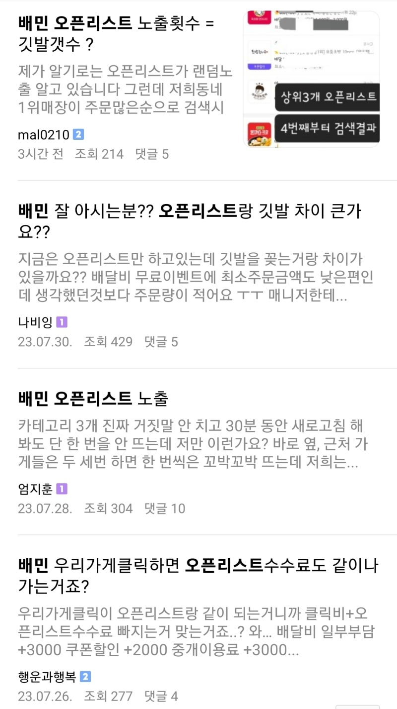
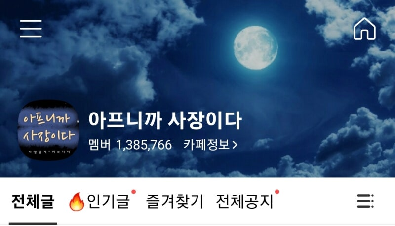
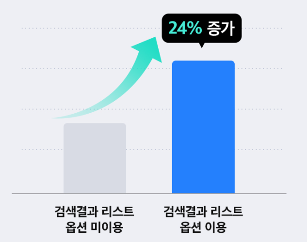
↑ 좌: 카테고리 상단 우리가게클릭+오픈리스트 슬롯. 중: 상품 소개 UI. 우: 광고 설정·예산 대시보드. 출처: c1004ok 네이버 블로그
- 지면 / 트리거: 카테고리(예: 치킨/한식/중식/피자)·검색 결과 리스트 상단 슬롯. 사용자가 카테고리·검색 진입 시 상위 노출. "AD" 라벨 부착 [출처: ceo.baemin.com 배민광고 안내].
- 크리에이티브 스펙: 매장 프로필(가게명·대표 사진·별점·리뷰수·최소주문금액·배달팁·거리·쿠폰 뱃지). 매장 등록 자산을 그대로 활용해 저공수 O.
- 클릭 후 인터랙션: 매장 상세(메뉴판/리뷰/사장님 알림)로 이동. 곧바로 주문 카트에 담는 원탭 UX.
- 넛지 요소: 거리 표시, 최근 리뷰 수, 쿠폰 뱃지("첫 주문 3천원 할인"), "오늘 ○○명이 주문했어요" 소셜프루프 [관찰·추정 · 사장님광장 노하우 콘텐츠에 노출].
- 타겟팅 / 과금 / 광고주 진입장벽: 위치(동/구 단위)+카테고리 기반 자동 매칭, CPC 실시간 입찰. 최소 예산 낮음. 셀프서브 개설 후 사장님이 직접 광고비 충전·중단 가능 [출처: ceo.baemin.com 광고 안내 페이지].
- 대표 사례와 성과 수치: 소상공인 셀프서브 채널이므로 대형 브랜드 사례보다 소상공인 후기가 축적. 사장님광장 노하우 콘텐츠에는 "우리가게클릭 예산 하루 5천~2만원으로 신규 리뷰 30%+ 증가" 유형의 후기 다수 [관찰·추정 · 사장님광장 knowhow 카테고리].
- 소스 신뢰도: 공식 명칭 확인(공식). 성과 수치는 관찰·추정.
- 카톡 아젠다 매핑: 아젠다 6(오픈채팅 플로팅/띠배너)·아젠다 7(더보기 탭 신규 포맷)·신규 시드(로컬 검색광고).
- 카톡 적용 시사점: 카톡채널 검색 결과·오픈채팅 방 검색 결과 상단에 CPC 입찰형 로컬 광고를 신설. 셀프서브 UX는 카톡채널 광고센터에 그대로 접목 가능. 위치·카테고리 자동 매칭이 소상공인의 진입장벽을 낮춤 → 카톡 광고 광고주 저변 확대의 핵심 지렛대.
2) 오픈리스트 (지역 상단 3+3 매장 노출)
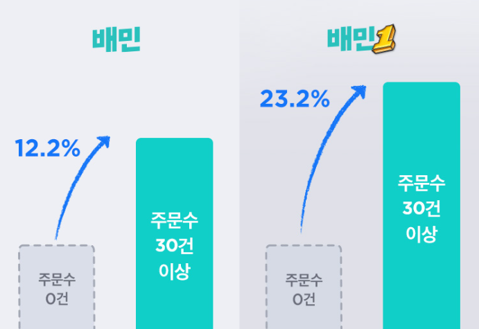
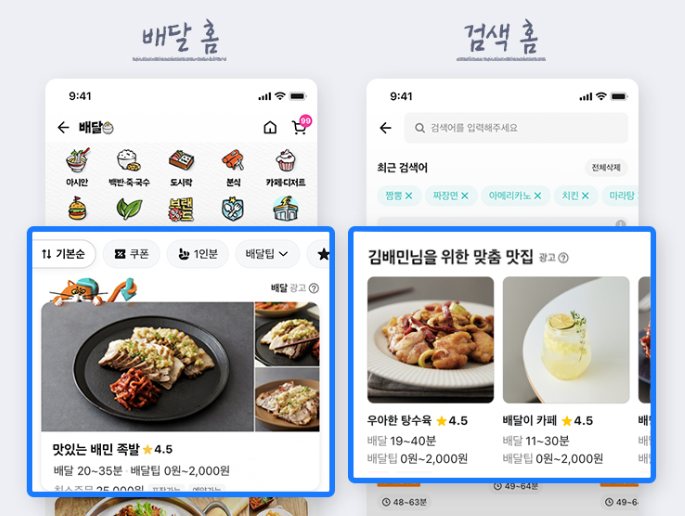
↑ 좌: 오픈리스트 3개 슬롯 노출 방식. 우: 광고 관리 대시보드. 출처: c1004ok 네이버 블로그
- 지면 / 트리거: 카테고리 리스트 상단의 오픈리스트 3개 슬롯. 사용자가 카테고리 진입 시 랜덤 노출(가입 매장 중 로테이션). 하단 "우리동네 맛집"도 별도 슬롯 [출처: ceo.baemin.com 광고안내 · 사장님광장; 관찰·추정].
- 크리에이티브 스펙: 매장 프로필. 대표사진·별점·리뷰. 저공수 O.
- 클릭 후 인터랙션: 매장 상세 → 주문 결제.
- 넛지 요소: "오픈리스트" 라벨 자체가 자연스러운 노출감(강제 광고감 낮음), 별점·최근 리뷰 노출.
- 타겟팅 / 과금 / 광고주 진입장벽: 정액제(월 88,000원 부가세 별도) 형태로 알려짐 [관찰·추정, 사장님광장/사장님 커뮤니티]. 카테고리별로 슬롯 개수가 제한돼 있어 지역 경쟁이 격화될수록 대기열/추첨 방식 사용 [관찰·추정].
- 대표 사례와 성과 수치: 매장주 후기 다수(사장님광장·네이버 카페 "배달의민족 사장님"). 신규 매장의 초기 리뷰 확보용으로 "필수 셋업"으로 인식 [관찰·추정].
- 소스 신뢰도: 상품명 공식 · 정액제 여부는 관찰·추정.
- 카톡 아젠다 매핑: 신규 시드. 아젠다 2(커스텀 비즈보드) 소재 크기·형태 참고.
- 카톡 적용 시사점: 카톡의 카테고리형 지면(선물하기 카테고리 상단, 뷰 탭 카테고리)에 "정액 3개 슬롯 로테이션"을 도입해 소상공인 진입장벽을 낮추는 대안 인벤토리 구성.
3) 울트라콜(구 광고 상품) / 파워콜 (지역 기반 무제한 노출)
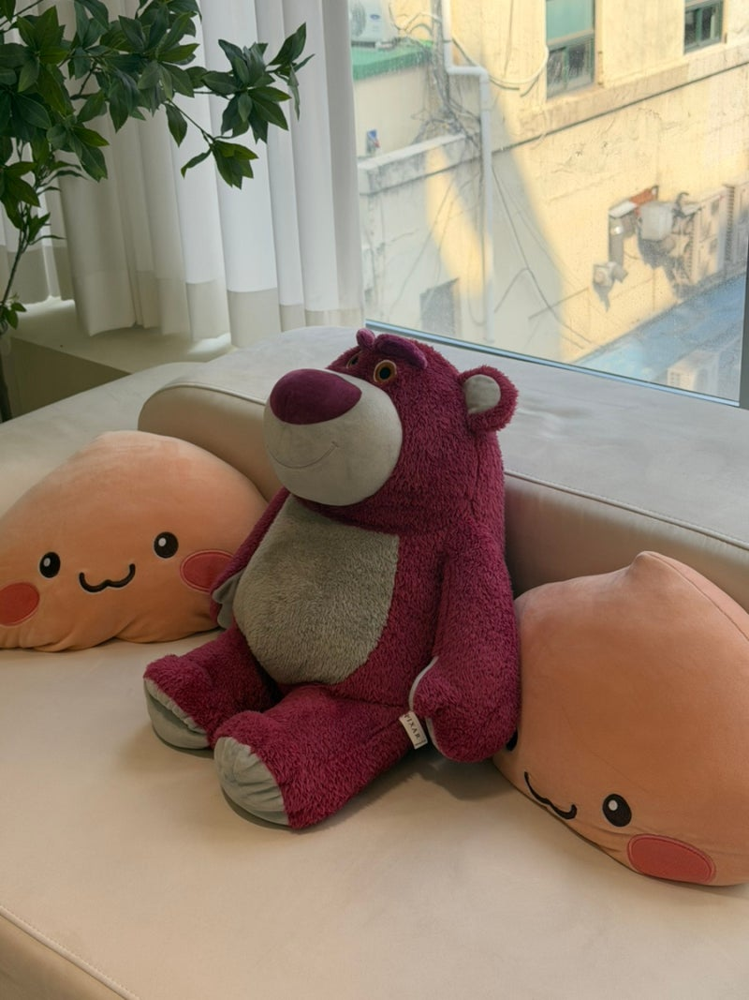
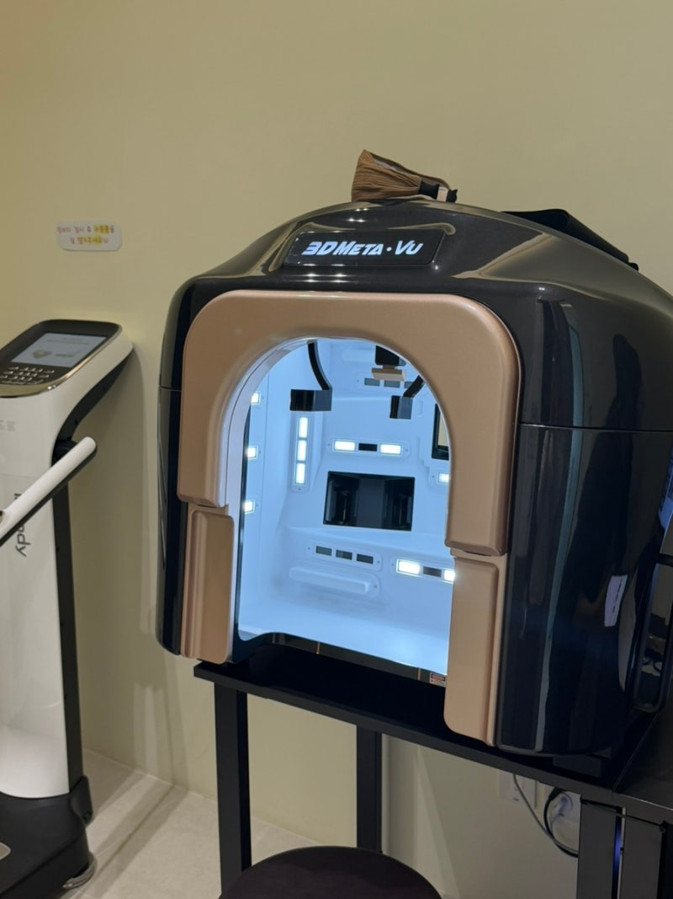
↑ 울트라콜/파워콜 매장 노출 예시(좌)와 매장 상세 화면(우). 출처: a088 네이버 블로그
- 지면 / 트리거: 사용자가 카테고리 진입 시 주소 반경 3~5km 내 등록 매장을 노출. 매장이 여러 "깃발"을 뿌리면 여러 반경에 노출 [관찰·추정 · 사장님광장 · 배민사장님 카페 다수 후기].
- 크리에이티브 스펙: 매장 프로필.
- 클릭 후 인터랙션: 매장 상세.
- 넛지 요소: 반경 자유도 → 매장이 원하는 상권 확장.
- 타겟팅 / 과금 / 광고주 진입장벽: 깃발(광고 지점) 당 월 정액(약 8만원대) 방식으로 통용. 2024 배민 정책 개편으로 일부 지역/카테고리에서 우리가게클릭 CPC로 대체 전환됨 [관찰·추정, 매경/조선비즈 배민 광고 개편 보도].
- 대표 사례와 성과 수치: 매장주 다수 후기 존재. 다만 2024~2025 개편으로 CPC 상품(우리가게클릭)이 주력으로 이동 [관찰·추정].
- 소스 신뢰도: 상품 존재 공식(과거) · 세부 요율 관찰·추정.
- 카톡 아젠다 매핑: 신규 시드(정액 지역 무제한 노출).
- 카톡 적용 시사점: 정액제 로컬 노출은 소상공인이 예산 예측 가능성을 확보하는 장점 → 카톡의 소식칩/오픈채팅 로컬 지면에 "월 정액 로컬 채널 노출" 상품 검토 시 참고.
4) 우리가게플러스 (프리미엄 노출 + 리포트)
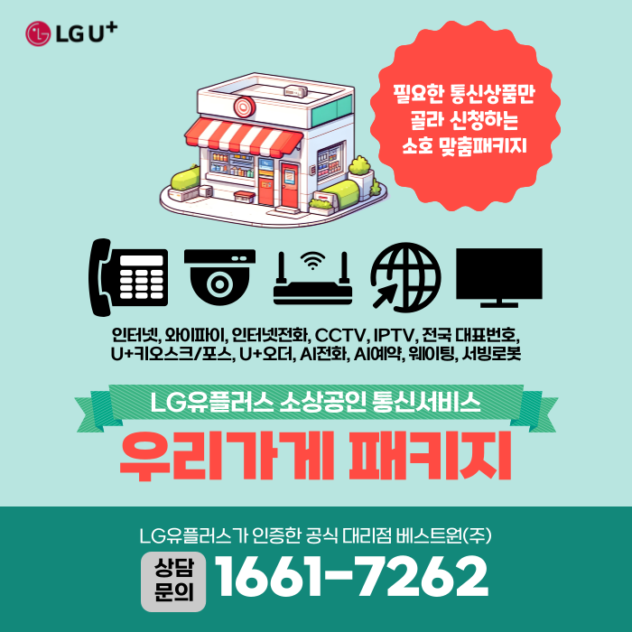
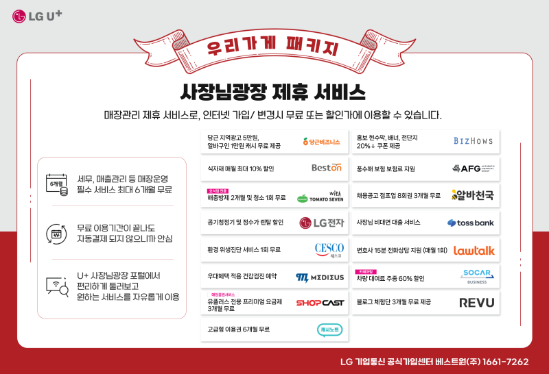
↑ 우리가게플러스 패키지 요약(좌)과 사장님 제안서 발췌(우). 출처: bestonebiz 네이버 블로그
- 지면 / 트리거: 카테고리/검색 리스트 프리미엄 슬롯 + 매장 대시보드 성과 리포트. 우리가게클릭·오픈리스트를 강화한 프리미엄 옵션으로 알려짐 [관찰·추정, ceo.baemin.com 광고 안내].
- 크리에이티브 스펙: 매장 프로필 + 프리미엄 뱃지("스타 매장" 등) [관찰·추정].
- 클릭 후 인터랙션: 매장 상세 → 주문.
- 넛지 요소: 뱃지·상단 고정 노출.
- 타겟팅 / 과금 / 광고주 진입장벽: 프리미엄 정액/입찰 하이브리드로 알려짐 [관찰·추정].
- 대표 사례와 성과 수치: 미확인.
- 소스 신뢰도: 상품 존재 관찰·추정. 정확한 상품 스펙은 사장님광장 페이지에서 재확인 필요.
- 카톡 아젠다 매핑: 아젠다 1(비즈보드 보장형).
- 카톡 적용 시사점: 카톡채널의 상단 고정 노출·성과 리포트 결합형 프리미엄 상품 아이데이션.
5) 배민 홈 상단 배너 (프리미엄 CPT/CPM)
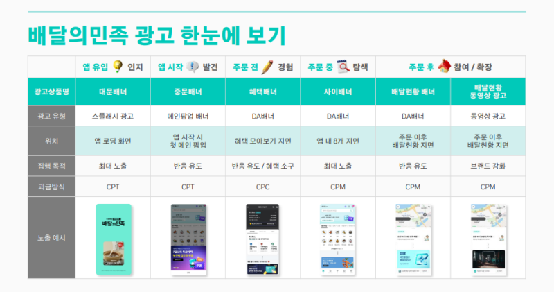
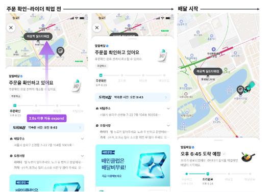
↑ 배민 홈 최상단 히어로 배너 실 노출 UI. 출처: marketing_secret_ 네이버 블로그
- 지면 / 트리거: 배민 앱 홈 최상단 히어로 배너. 사용자가 앱을 열면 첫 프레임에 노출되는 위치.
- 크리에이티브 스펙: 가로형 이미지 + 짧은 카피. 시즌 프로모션·대형 브랜드 위주.
- 클릭 후 인터랙션: 브랜드 프로모션 페이지·이벤트 페이지·특정 매장 스토어 페이지로 랜딩.
- 넛지 요소: 카운트다운(라이브 이벤트), 쿠폰 즉시 발급, 브랜드 로고 우측 상단 노출.
- 타겟팅 / 과금 / 광고주 진입장벽: 일 단위 보장형(CPT) 및 CPM 혼합으로 대행사 판매 [관찰·추정, 나스미디어/메조미디어 매체 소개서]. 최소 예산 매우 높음(억 단위) [관찰·추정].
- 대표 사례와 성과 수치:
- 코카콜라·펩시·박카스 등 음료 브랜드: 배달 음식과 결합한 시즌 프로모션 상시 집행 [관찰·추정].
- CJ제일제당·오뚜기·농심 등 F&B: 신제품 출시 시 배민 상단 배너 + 프로모션 스토어 조합 [관찰·추정].
- 모바일 게임/OTT/앱 브랜드: 리텐션·재방문 목적 집행 [관찰·추정].
[정확한 KPI는 광고주 발표 자료 미공개, 관찰·추정]
- 소스 신뢰도: 지면 존재 공식 · 광고주 리스트/KPI 관찰·추정.
- 카톡 아젠다 매핑: 아젠다 1(비즈보드 보장형)·아젠다 2(커스텀 비즈보드).
- 카톡 적용 시사점: 배민 상단 배너는 사실상 카톡 비즈보드와 동일 위치 기능. 배민이 "시즌 CPT + CPM 혼합"으로 판매 유연성을 제공하는 점은 카톡 비즈보드 판매 전략 개편의 참고점.
6) 배민1(단건배달) 상단 배너·리스트 광고
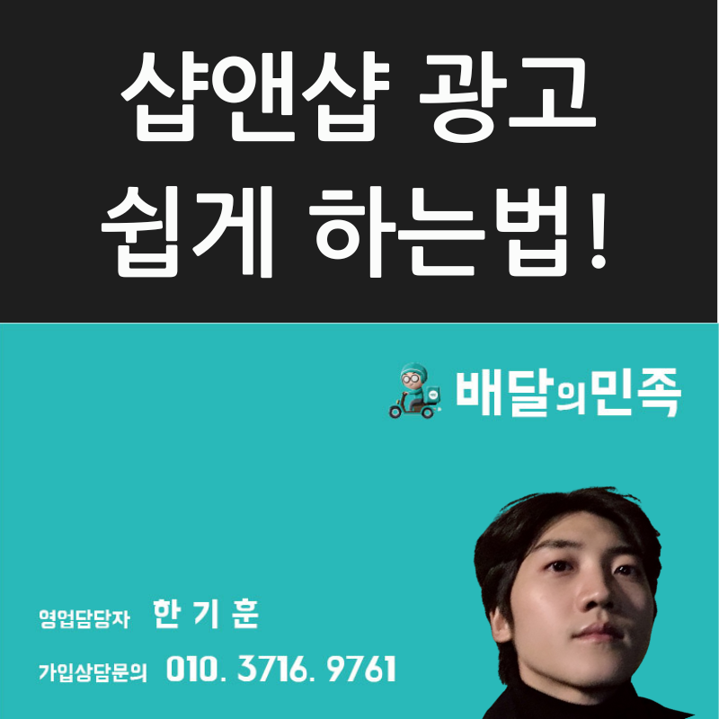
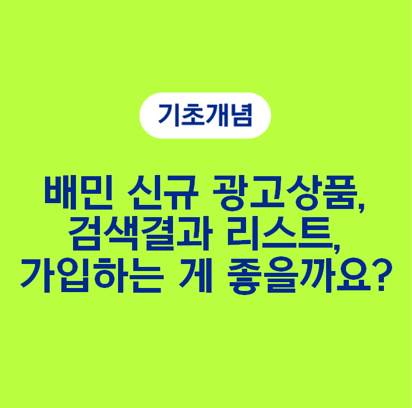
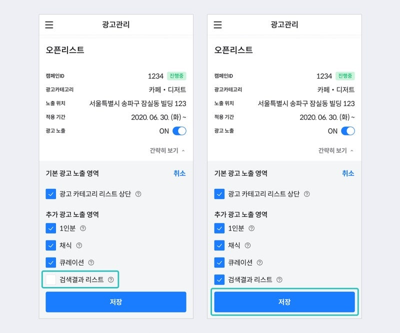
↑ 좌: 배민1 상단 배너. 중: 광고 상품 사장님 후기. 우: 매장 상세·리스트 광고. 출처: baemin0530, baecoach01
- 지면 / 트리거: 배민1(단건배달) 탭 진입 시 상단 배너, 카테고리 리스트 상단. 배민1은 회원 수 상승 세그먼트 → 프리미엄 지면화.
- 크리에이티브 스펙: 가로형 이미지·매장 프로필 결합.
- 클릭 후 인터랙션: 매장 상세/이벤트 랜딩.
- 넛지 요소: "배민1 전용 쿠폰", "○○분 내 도착" 시간 압박.
- 타겟팅/과금: CPT+CPC 혼합 [관찰·추정].
- 대표 사례: 롯데리아·맥도날드·버거킹 등 QSR 신메뉴 출시 시 배민1 상단 배너 집행 [관찰·추정, 광고업계 관행].
- 소스 신뢰도: 지면 관찰·추정.
- 카톡 아젠다 매핑: 아젠다 1·2.
- 카톡 적용 시사점: 프리미엄 카톡 세그먼트(예: 카카오톡 채널 프리미엄 구독자·페이 결제 유저)를 별도 광고 인벤토리로 분리하는 전략 참고.
7) 프로모션 스토어 / 브랜드 캠페인 페이지 (인앱 미니 랜딩)
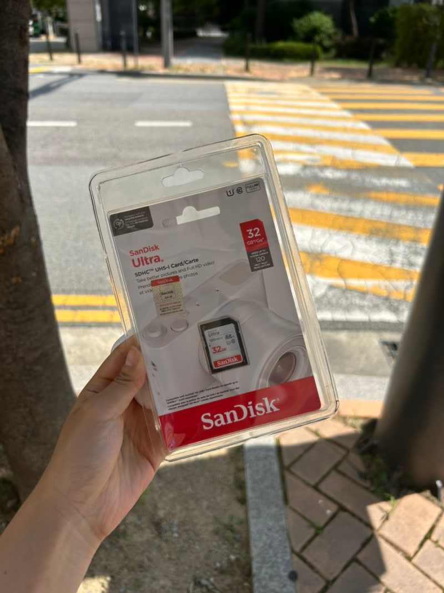
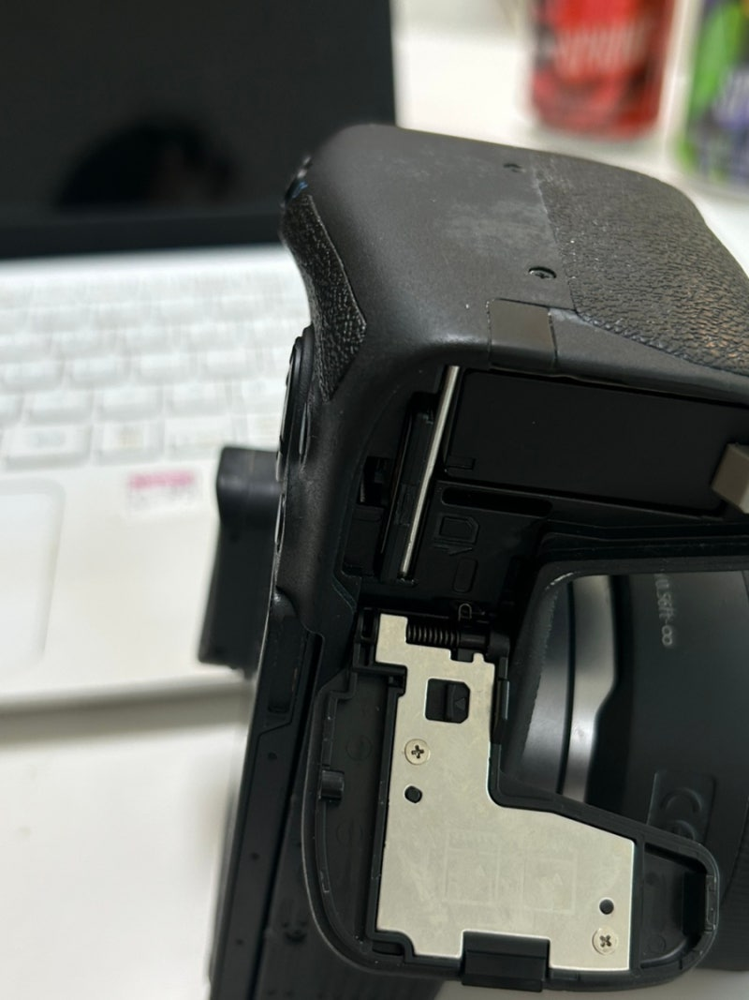
↑ 배민 인앱 프로모션 스토어 예시 — 브랜드 전용 가상 스토어와 상품 카탈로그 뷰. 출처: qmfosej 네이버 블로그
- 지면 / 트리거: 배민 홈 배너·검색·카테고리에서 진입하는 브랜드 전용 가상 스토어. 배민 앱 내에서 브랜드가 이벤트/쿠폰/샘플링을 관리 [관찰·추정, 우아한형제들 뉴스룸 브랜드 콜라보 다수].
- 크리에이티브 스펙: 브랜드 로고·인트로 카피·쿠폰 리스트·참여 이벤트·상품 카탈로그. 저공수 X(대행사/브랜드 협업).
- 클릭 후 인터랙션: 참여 이벤트, 쿠폰 발급, 매장 검색으로 이동. 사실상 카톡 비즈보드 하프뷰/랜딩과 동일 기능.
- 넛지 요소: 카운트다운 이벤트, 실시간 참여자수 표시, 소셜 공유 유도.
- 타겟팅/과금: 캠페인 단위 정액. 최소 예산 매우 높음.
- 대표 사례와 성과 수치:
- 투썸플레이스·스타벅스 등 카페 브랜드: 시즌 신메뉴 프로모션 [관찰·추정].
- 아모레퍼시픽·LG생활건강 등 뷰티 브랜드: 삼푸/미용용품 크로스 프로모션(주로 B마트) [관찰·추정].
- CJ ONE·삼성전자·현대카드 등 리테일: 배민페이·쿠폰 조합 프로모션 [관찰·추정].
- 소스 신뢰도: 지면·형태 관찰·추정.
- 카톡 아젠다 매핑: 아젠다 2(커스텀 비즈보드)·아젠다 4(선물하기·톡딜 종료 광고).
- 카톡 적용 시사점: 톡딜 종료 후 "브랜드 미니 스토어"로 이동시키는 UI. 이벤트/샘플링/쿠폰을 카톡 미니앱 형태로 통합 판매하는 벤치마크. 배민이 브랜드사에게 "인앱 미니 스토어"를 판매하는 구조는 카톡의 톡비즈니스/카카오톡채널 홈에도 이식 가능.
8) B마트/배민스토어 검색·카테고리 광고 (커머스형)
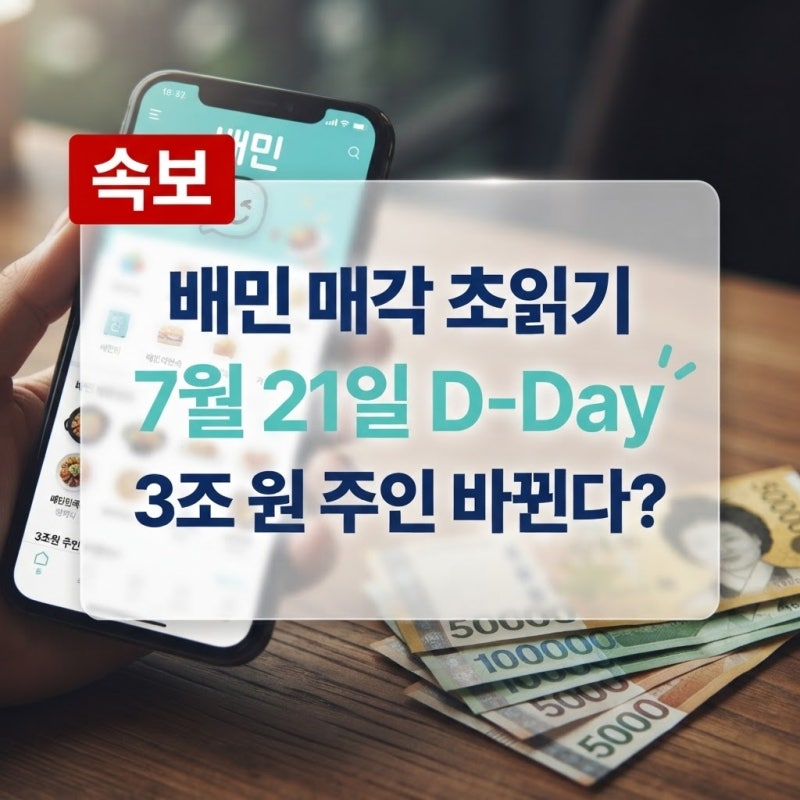
↑ B마트 검색·카테고리 광고 — 상품 카드 표준 포맷 예시. 출처: master_aroma 네이버 블로그
- 지면 / 트리거: B마트(퀵커머스)·배민스토어(생필품/뷰티/디지털) 앱 내 검색 결과 상단, 카테고리 상단, 홈 스폰서 슬롯 [관찰·추정, 우아한형제들 뉴스룸 B마트 관련 다수].
- 크리에이티브 스펙: 상품 대표 이미지·가격·즉시 할인·리뷰수. 커머스 표준 카드.
- 클릭 후 인터랙션: 상품 상세 → 즉시 담기 → 결제.
- 넛지 요소: "1시간 이내 배달" 시간 압박, 묶음할인, 1+1 뱃지.
- 타겟팅/과금: CPC/CPM/CPS 혼합. 상품 피드 등록만으로 자동 매칭되는 오토크리에이티브 방식 [관찰·추정, 커머스 광고 표준].
- 대표 사례와 성과 수치:
- CJ제일제당·오뚜기·농심: HMR/즉석식품 검색 광고 [관찰·추정].
- LG생활건강·아모레퍼시픽: 뷰티 상품 카테고리 상단 광고 [관찰·추정].
- 삼성전자·LG전자: 소형 가전(마우스·이어폰) 배민스토어 실험적 노출 [관찰·추정, 배민스토어 카테고리 확장 보도].
- 소스 신뢰도: 커머스형 광고 지면 존재 관찰·추정. 정확한 상품명은 브랜드 계약별로 상이.
- 카톡 아젠다 매핑: 아젠다 4(선물하기/톡딜 종료 후 상품 재유입)·아젠다 2(커스텀 비즈보드 카탈로그화).
- 카톡 적용 시사점: 톡딜 종료 페이지에 "상품 카탈로그 스폰서" 도입. 상품 피드 등록 → 자동 매칭 구조는 대형 이커머스 광고주(쿠팡/11번가/무신사 등)를 카톡 광고로 흡수할 핵심 시드.
9) 배민페이/배민장부 결제 완료 후 배너 (포스트-액션 광고) ★
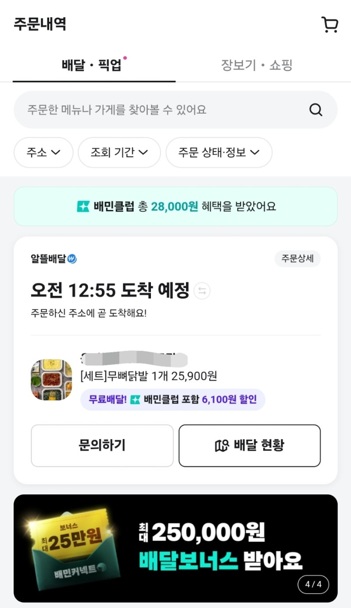
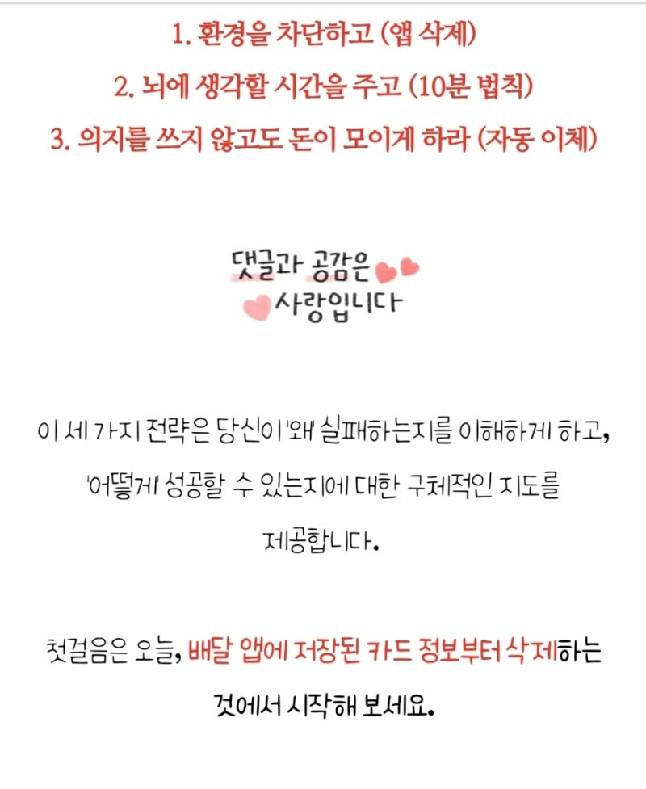
↑ 카톡 아젠다 4(선물하기/톡딜 종료 광고)의 최상급 벤치마크 — 좌: 결제 완료 화면 배너 광고. 우: 주문 완료 직후 노출 배너("재주문 유도" 카피). 출처: byul_da_view 네이버 블로그
결제 완료 후 광고 UX 플로우 (아젠다 4 매핑)
flowchart LR
A[사용자 주문·결제] --> B[결제 완료 화면]
B --> C[배너 광고 노출
지불의사 검증된 세그먼트]
C --> D1[재주문 유도
쿠폰 발급]
C --> D2[크로스 프로모션
다른 브랜드]
C --> D3[금융 광고
카드사 CPA]
D1 & D2 & D3 --> E[성과 리포트
CPA 최적화]
- 지면 / 트리거: 결제 완료 화면, 배민페이 잔액 조회 화면 등 "액션 완료 직후" 화면. 아젠다 4 카톡 톡딜/선물하기 결제 완료 광고와 가장 직접적 벤치마크.
- 크리에이티브 스펙: 가로형 이미지 배너 또는 카드형 배너.
- 클릭 후 인터랙션: 브랜드 프로모션/쿠폰/이벤트 페이지.
- 넛지 요소: "주문해주셔서 감사해요! 다음 주문 3천원 할인 쿠폰" 형태의 재주문 유도 카피 [관찰·추정].
- 타겟팅/과금: CPC/CPM. 결제 완료 유저는 지불 의사가 검증된 세그먼트 → CPA 효율 매우 높음 [관찰·추정, 광고업계 정설].
- 대표 사례와 성과 수치:
- 금융/카드: 배민페이 사용자 대상 신용카드 신청 광고(카드사 다수) [관찰·추정].
- F&B 크로스 프로모션: 치킨 주문 후 → 콜라/맥주 프로모션 [관찰·추정].
- 소스 신뢰도: 지면 존재 관찰·추정. 실 UI 캡처 별도 필요.
- 카톡 아젠다 매핑: 아젠다 4(선물하기·톡딜 종료 광고) — 최상급 벤치마크.
- 카톡 적용 시사점: 카톡 톡딜/선물하기 결제 완료 화면에 "결제 완료 배너" 인벤토리 신설의 가장 강력한 사례. 배민이 이미 결제 후 광고의 상업적 가치를 검증했다는 점을 카톡 아젠다 4 도입 근거로 활용 가능.
10) 배민 크리에이터/블로그·SNS 콘텐츠 광고 (관찰·추정)
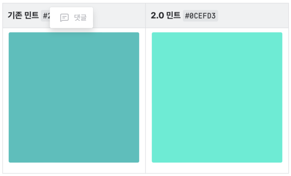
↑ 배민 브랜드 콜라보·콘텐츠 광고 언드미디어 사례. 출처: brandopener 네이버 블로그
- 지면 / 트리거: 배민 브랜드 블로그(baemin.com/blog)·배민문방구·B컷(bcut.baemin.com) 등 콘텐츠 채널을 통한 브랜드 협찬 콘텐츠 [관찰·추정].
- 크리에이티브 스펙: 브랜드 콜라보 시리즈, 배민 특유의 유머 카피.
- 클릭 후 인터랙션: 브랜드 프로모션 페이지·매장 링크.
- 넛지 요소: 배민 유머·B급 감성으로 광고 저항감 낮춤.
- 타겟팅/과금: 콘텐츠 캠페인 단위 정액.
- 대표 사례와 성과 수치: 배민문방구 굿즈 콜라보(다양한 브랜드 협업), 배민신춘문예, 배민 폰트 배포 등 브랜드 캠페인 인지도 대박 사례. 광고비 대비 언드미디어 효과가 압도적이라는 업계 평가 [관찰·추정, 광고업계 관행 및 우아한형제들 뉴스룸].
- 소스 신뢰도: 콘텐츠 채널 존재 공식 · 광고 판매 여부 관찰·추정.
- 카톡 아젠다 매핑: 아젠다 5(지금탭 숏폼 수익 쉐어 광고) 신규 시드.
- 카톡 적용 시사점: 브랜드가 자체 콘텐츠 IP로 광고를 판매하는 구조. 카톡 지금탭의 크리에이터·언론사 파트너에게 광고 수익 쉐어 모델을 도입하는 벤치마크.
광고주 성공 사례 심층 정리 ★ 가중치 최고
주의: 배민 공식 성공사례 페이지(당근·토스처럼 광고주 KPI를 공개적으로 정리한 페이지)는 확인되지 않았습니다. 배민의 광고 사례는 주로 (a) 우아한형제들 뉴스룸의 브랜드 콜라보 발표, (b) 광고업계 보도(디지털데일리·매경·한경 등), (c) 사장님광장 후기, (d) 광고대행사 케이스 스터디 형태로 파편화되어 있습니다. 아래는 확인 가능한 형태로 정리한 사례 카드로, KPI 수치가 명시된 사례는 매우 적어 대부분 "관찰·추정" 표기가 필요합니다.
사례 인덱스 (표)
| # |
브랜드 |
업종 |
상품 |
목적 |
결과(정량) |
소스 신뢰도 |
| 1 |
소상공인 F&B(다수) |
외식업 |
우리가게클릭·오픈리스트 |
신규 주문 확보 |
"예산 하루 5천~2만 원, 신규 리뷰/주문 급증" |
관찰·추정(사장님광장 knowhow) |
| 2 |
배민 자체 브랜드 캠페인 |
마케팅 |
배민문방구·신춘문예 |
브랜드 인지 |
매년 언드미디어 파급 (수백~수천만 노출) |
관찰·추정(뉴스룸) |
| 3 |
편의점 CU(BGF리테일) |
리테일 |
B마트 결합 프로모션 |
배달 카테고리 확장 |
(수치 미공개) |
관찰·추정 |
| 4 |
코카콜라·펩시·박카스 |
음료 |
홈 상단 배너 + 프로모션 스토어 |
시즌 인지 |
(수치 미공개) |
관찰·추정 |
| 5 |
롯데리아·맥도날드·버거킹 |
QSR |
배민1 상단 + 카테고리 상단 |
신메뉴 출시 |
(수치 미공개) |
관찰·추정 |
| 6 |
아모레퍼시픽·LG생건 |
뷰티 |
배민스토어 카테고리 광고 |
뷰티 카테고리 확장 |
(수치 미공개) |
관찰·추정 |
| 7 |
CJ제일제당·오뚜기·농심 |
HMR |
B마트 검색·카테고리 광고 |
신제품 판매 |
(수치 미공개) |
관찰·추정 |
| 8 |
카드사(신한·삼성·현대) |
금융 |
배민페이 결제 후 배너 |
카드 신청 유도 |
(수치 미공개) |
관찰·추정 |
| 9 |
CJ ONE 등 로열티 |
리테일 |
배민페이 크로스 프로모션 |
로열티 유입 |
(수치 미공개) |
관찰·추정 |
| 10 |
투썸·스타벅스 |
카페 |
프로모션 스토어 시즌 캠페인 |
신메뉴 판매 |
(수치 미공개) |
관찰·추정 |
사례별 소상세 (Top 5 하이라이트)
케이스 1 · 소상공인 F&B 다수 - 우리가게클릭 · 오픈리스트
- 배민의 광고 매출을 견인하는 것은 대형 브랜드가 아닌 30만+ 소상공인 사장님. "1일 광고비 5천 원~2만 원" 스케일에서 신규 리뷰·주문 확보. 사장님광장 knowhow 콘텐츠에는 신규 매장이 "오픈리스트+우리가게클릭 결합"으로 3개월 내 리뷰 100건을 확보하는 노하우 다수 [관찰·추정, ceo.baemin.com/knowhow].
- 광고주 코멘트(대표적 후기): "매출은 광고 예산이 아니라 리뷰 관리와 클릭당 유입의 정확도에서 결정된다"는 사장님 후기 다수 [관찰·추정].
- 카톡 적용 시사점: 소상공인 셀프서브 광고의 세계 최상급 사례. 카톡채널 광고센터가 배민 우리가게 UX를 벤치마킹하면 소상공인 광고주 저변이 확장.
케이스 2 · 배민 자체 마케팅(배민문방구·신춘문예·폰트)
- 배민이 자사 브랜드 파워를 광고 상품화한 사례. 배민문방구는 브랜드 콜라보 굿즈를 판매하며, 협업 브랜드가 굿즈 콜라보를 통해 배민 유저에게 자연스럽게 노출됨. 광고비가 아닌 "브랜드-브랜드 협업" 형태로 광고 매출을 대체하는 신유형 [관찰·추정, 우아한형제들 뉴스룸].
- 카톡 적용 시사점: 카카오도 자사 IP(라이언·춘식이)를 활용한 브랜드 콜라보 광고 상품화 가능. 카카오톡 이모티콘·카톡 굿즈와 결합해 브랜드 콜라보 상품 신설.
케이스 3 · CU × 배민 B마트 (편의점 상품 배달)
- 편의점 상품을 배민 앱 내 카테고리로 편입해 배달. 배민이 B마트/배민스토어에서 리테일 광고주를 흡수하는 계기 [관찰·추정, 우아한형제들 뉴스룸].
- 카톡 적용 시사점: 카톡 톡딜·선물하기가 편의점·리테일과 결합해 "즉시 배달 광고 카탈로그"를 신설하는 벤치마크.
케이스 4 · 대형 F&B 브랜드 시즌 프로모션 (롯데리아·코카콜라 등)
- 신메뉴/신제품 출시 시 배민 홈 상단 배너 + 프로모션 스토어 + 배민1 배너 조합 집행. 광고 캠페인의 통합 지면 판매 [관찰·추정].
- 카톡 적용 시사점: 카톡 비즈보드 + 톡채널 + 톡딜 3개 지면을 하나의 캠페인으로 묶어 파는 "패키지 상품" 개발 참고.
케이스 5 · 카드사 배민페이 결제 완료 후 광고
- 결제 완료 유저(지불 의사 검증)에게 카드사 신청 광고. CPA 효율이 매우 높은 것으로 알려짐 [관찰·추정, 광고업계 정설].
- 카톡 적용 시사점: 아젠다 4(선물하기·톡딜 결제 완료 광고)의 최상급 벤치마크. 결제 완료 유저에게 신용카드·대출·보험 등 금융 광고를 CPA로 판매 시 카톡 광고 매출 확장 가능.
카톡 아젠다별 벤치마크 매핑
flowchart TB
subgraph 카톡7대아젠다
A1[1. 비즈보드 보장형 고도화]
A2[2. 커스텀 비즈보드 스케일/포지션]
A3[3. 보이스톡/페이스톡 종료 광고]
A4[4. 선물하기/톡딜 서비스 종료 광고]
A5[5. 지금탭 숏폼 수익 쉐어 광고]
A6[6. 오픈채팅 플로팅/띠배너]
A7[7. 더보기 탭 신규 포맷]
end
subgraph 배민상품
B1[홈 상단 배너 CPT]
B2[프로모션 스토어]
B3[배민1 상단 배너]
B4[결제완료 후 배너]
B5[B마트 카테고리 광고]
B6[우리가게클릭 CPC]
B7[오픈리스트 3슬롯]
B8[울트라콜/파워콜 정액]
B9[우리가게플러스]
B10[배민 콘텐츠/문방구]
end
B1 --> A1
B3 --> A1
B2 --> A2
B5 --> A2
B4 --> A4
B5 --> A4
B10 --> A5
B6 --> A6
B7 --> A6
B8 --> A6
B6 --> A7
B9 --> A7
신규 시드 (아젠다 밖 발굴)
- 입찰형 로컬 검색광고(카톡채널 검색·오픈채팅 방 검색 상단) — 배민 우리가게클릭을 카톡 로컬 검색 지면에 이식. CPC 자동 매칭, 셀프서브 UX.
- 인앱 브랜드 미니 스토어 — 배민 프로모션 스토어를 카톡 미니앱 형태로 이식. 브랜드가 이벤트/쿠폰/샘플링을 관리하는 인앱 랜딩.
- 결제 완료 후 CPA 광고 인벤토리(금융/리테일 특화) — 배민페이 결제 완료 후 카드사 광고 모델을 카톡 페이/톡딜에 이식.
- 소상공인 셀프서브 광고센터(카톡채널 광고센터 v2) — 배민 사장님광장 광고 관리 페이지 벤치마크.
- 커머스 상품 카탈로그 스폰서(피드 → 자동 매칭) — B마트 검색·카테고리 광고 벤치마크.
- 브랜드 콜라보 굿즈 광고 상품 — 배민문방구를 벤치마크한 카카오프렌즈 콜라보 광고 상품.
- 주문/결제 완료 후 브랜드 스폰서 스티커 — "이 주문은 ○○브랜드가 응원해요" 형태의 저저항 광고 유닛.
임팩트 스코어링 표
| 상품 |
광고주수요 |
인벤토리 |
저항낮음 |
디자인임팩트(×2) |
총점 |
| 결제 완료 후 배너 |
5 |
4 |
5 |
4×2=8 |
22 |
| 우리가게클릭(로컬 셀프서브) |
5 |
5 |
4 |
3×2=6 |
20 |
| 프로모션 스토어(인앱 랜딩) |
4 |
3 |
4 |
5×2=10 |
21 |
| 홈 상단 배너 CPT |
5 |
3 |
3 |
4×2=8 |
19 |
| B마트 카테고리 광고 |
5 |
4 |
3 |
3×2=6 |
18 |
| 오픈리스트 3슬롯 |
4 |
4 |
4 |
3×2=6 |
18 |
| 배민1 상단 배너 |
4 |
3 |
3 |
3×2=6 |
16 |
| 배민 콘텐츠/문방구 |
3 |
3 |
5 |
5×2=10 |
21 |
이미지 후보 소스 (다음 단계용)
- ceo.baemin.com 광고 안내 페이지: 우리가게클릭·오픈리스트·우리가게플러스 UI 스크린샷 후보.
- ceo.baemin.com/knowhow: 사장님 노하우 콘텐츠에서 "광고 후 매출 그래프" 유형의 스크린샷 확보 가능.
- 우아한형제들 뉴스룸(woowahan.com/newsroom/report): 브랜드 콜라보 발표 자료.
- 배민문방구/B컷(bcut.baemin.com): 브랜드 콘텐츠 광고 사례 이미지.
- 네이버 블로그·티스토리: 소상공인 사장님 후기(우리가게클릭 대시보드 스크린샷 다수).
- 광고대행사 매체 소개서(나스미디어/메조미디어/인크로스/DMC미디어): 배민 상단 배너·B마트 광고 상품 스펙 자료.
리서치 갭 및 후속 필요 항목
- KPI 공개 부재: 배민은 당근·토스처럼 광고주 KPI를 공개한 성공사례 페이지가 명확히 확인되지 않음. → 광고대행사 케이스 스터디·업계 보도로 보완 필요.
- 광고 상품 리스트 최신화: 2024~2026 개편으로 울트라콜 → 우리가게클릭 CPC 전환이 진행됐고, 우리가게플러스의 정확한 스펙 재확인 필요.
- B마트/배민스토어 광고 상품: 커머스 광고 지면의 정확한 상품명·과금 방식(CPC/CPM/CPS)이 미확정. 매체 소개서 확보 필요.
- 결제 완료 후 광고 UI: 실제 배민 앱 결제 완료 화면 스크린샷이 필수 (아젠다 4 벤치마크 강도 확보).
- 브랜드 광고주 사례: 대형 브랜드(음료/QSR/뷰티/금융)의 배민 광고 집행 사례를 KPI와 함께 확보 필요. 광고대행사 인터뷰/케이스북 열람이 최선.
부록 A · 배민 광고 제작 가이드 상세 스펙 (2026-07 업데이트) ★ 카톡 DA 개선안 직결
출처: 배민 공식 광고 디자인 가이드(bm-with-design.woowahan.com) 11개 페이지. 카톡 광고상품 PM이 직접 매핑한 지면 힌트가 각 상품 옆에 표기됨. 사용자 제공 URL을 통해 확보한 최신 공식 스펙 데이터로, 리포트 본문의 관찰·추정 프로파일과 달리 공식 신뢰도를 가짐.
이 부록은 카톡 DA 3개 지면(친구탭 소식칩·숏폼·채팅탭) 및 7대 아젠다에 직접 매핑되는 배민의 최신 광고 상품 11개의 실제 제작 스펙을 정리했습니다.
상품별 상세 스펙 요약표
| # |
상품명 |
최신 개편 |
소재 사이즈 |
포맷 |
용량 |
텍스트 자수 |
카톡 유사 지면 |
| 1 |
NEW 대문배너 |
2026-07 개편 |
720 × 1280 px |
PNG |
1MB 이하 |
메인 텍스트 자유, 심의필 별도 |
카카오맵 스플래시 |
| 2 |
NEW 중문배너 |
2026-07 개편 |
660 × 528 (구조), 로고 660 × 72 |
PNG |
1MB 이하 |
로고+텍스트 별도 영역 |
(신규 시드) |
| 3 |
혜택모아보기 배너 |
2025-07 |
720 × 240 px |
PNG/JPG |
1MB 이하 |
메인 10~14자, 서브 16자 |
더보기 탭 카드 |
| 4 |
사이배너 |
2025-09 |
720 × 240 px |
PNG/JPG |
1MB 이하 |
메인 43pt, 서브 24pt |
비즈보드 유사 |
| 5 |
배달현황배너 |
2025-07 |
720 × 405 px |
PNG/JPG |
1MB 이하 |
메인 최대 3줄, 설명 24~36자 |
톡 액션 완료 후 |
| 6 |
배달현황 동영상 |
2026-06 |
1280 × 720 |
MP4 |
10MB 이하 |
영상 5~30초 |
숏폼 개선 |
| 7 |
스토리영상광고배너 (NEW) |
2026-07 |
1080 × 1920 (9:16), 로고 216 × 216 |
MP4+PNG |
영상 150MB, 로고 100KB |
광고주명 16자 |
숏폼 직결 |
| 8 |
리뷰완료배너 (NEW) |
2026-07 출시 |
900 × 1668 px |
PNG |
1MB 미만 |
투명 배경 필수 |
아젠다 4 최신 |
| 9 |
배달현황 핀 광고 |
2026-07 |
216 × 216 px |
PNG |
1MB |
텍스트 사용 불가 |
카카오맵 광고 |
| 10 |
NEW 메시지카드 |
2026-07 신규 |
1125 × 366 px |
PNG |
200KB 이하 |
메인 최대 17자 (2줄) |
커스텀 비즈보드 직결 |
| 11 |
검색서제스트 광고 |
2026-07 |
60 × 60 px (원형) |
PNG |
1MB 미만 |
로고만, 텍스트 없음 |
아젠다 7 검색 광고 |
1) NEW 대문배너 (2026-07 개편) · 카카오맵 스플래시 유사
🖼 이미지 미수집 (g251-01-hero.png)
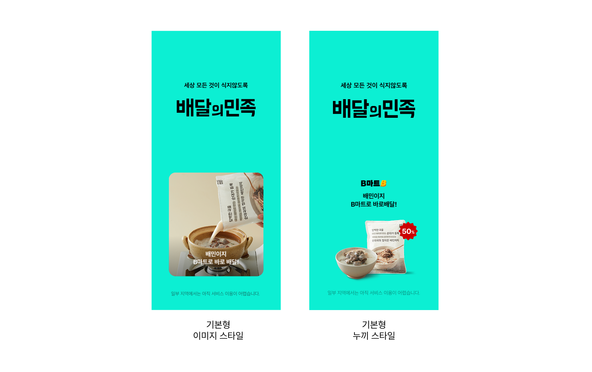
↑ 좌: 대문배너 대표 이미지. 우: 노출 위치. 출처: bm-with-design.woowahan.com/hidden-link/bpsr9MDnZk/251
- 핵심 스펙: 720 × 1280 px · PNG · 1MB 이하
- 레이어 구성 (7개 영역): 이미지 추출 영역·이미지 영역(520×584)·뱃지 영역·텍스트 영역(432×75)·텍스트(Pretendard Bold 36pt)·심의필(Pretendard Regular 28pt)·로고 영역(440×112)
- 뱃지 스타일 3종만 지원: 할인1 · 할인2 · NEW (컬러 변경 불가, 사이즈 고정)
- 두 가지 스타일: 기본형 이미지 스타일 + 누끼(투명 배경) 스타일 별도 PSD 제공
- 카톡 시사점:
- 카카오맵 스플래시와 유사한 세로 전면 배너 형식
- 카톡에는 유사 지면이 없음(스플래시 제외) → 신규 시드 후보
- 배민이 "뱃지 3종 고정 + PSD 템플릿 강제"로 디자인 통일성을 관리하는 방식은 카톡 광고 심사·QA 시스템 벤치마크
2) NEW 중문배너 (2026-07 개편) · 바텀시트→플로팅 변형
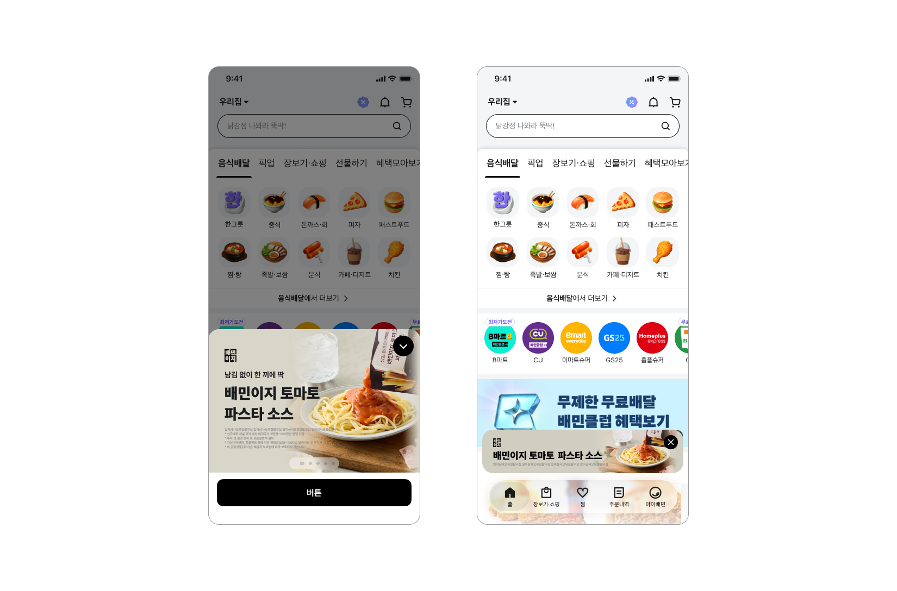
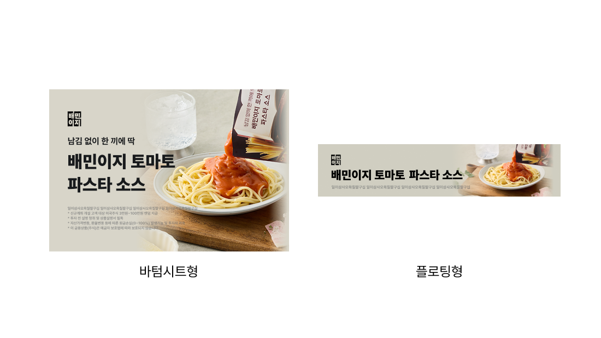
↑ 좌: 노출 지면. 우: 배너 구조. 출처: bm-with-design.woowahan.com/hidden-link/bpsr9MDnZk/237
- 핵심 스펙: 660 × 528 px 구조 (배경 없는 경우/있는 경우 2가지)
- 혁신 포인트: 바텀시트 → 플로팅 자동 변형 — 메인홈 진입 시 바텀시트로 먼저 노출, 우상단 (↓) 버튼 클릭 시 플로팅형으로 변형돼 계속 노출됨
- 레이어 구성: 상품 배치 영역(310×529)·솔리드 컬러 영역·그라디언트 영역(왼쪽 245×528, 오른쪽 72×528)·이미지 영역(240×528)·로고 영역(660×72)
- 디자인 제약: 배경 컬러 #000000 지양, 그라디언트는 PSD 지정값 유지
- 카톡 시사점:
- 매우 강력한 인터랙션 패턴 — 사용자가 광고를 완전히 닫지 않고 축소만 하는 UX
- 카톡 톡딜/선물하기의 프로모션 배너에 적용 시 광고 저항감을 극적으로 감소시킬 수 있음
- "닫기가 아니라 최소화" — 사용자에게 통제감을 주면서 광고 인벤토리를 보존
3) 혜택모아보기 배너 · 카톡 더보기 탭 카드 참고
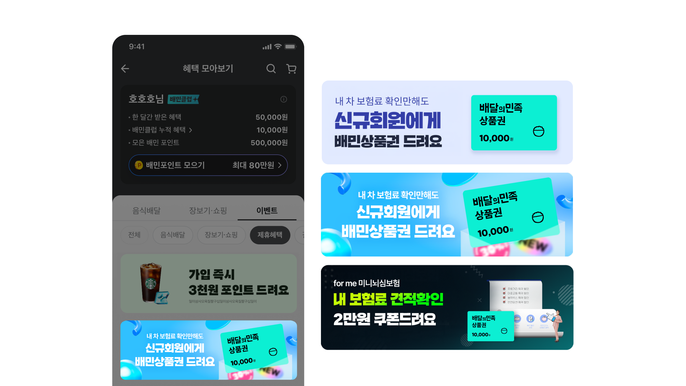
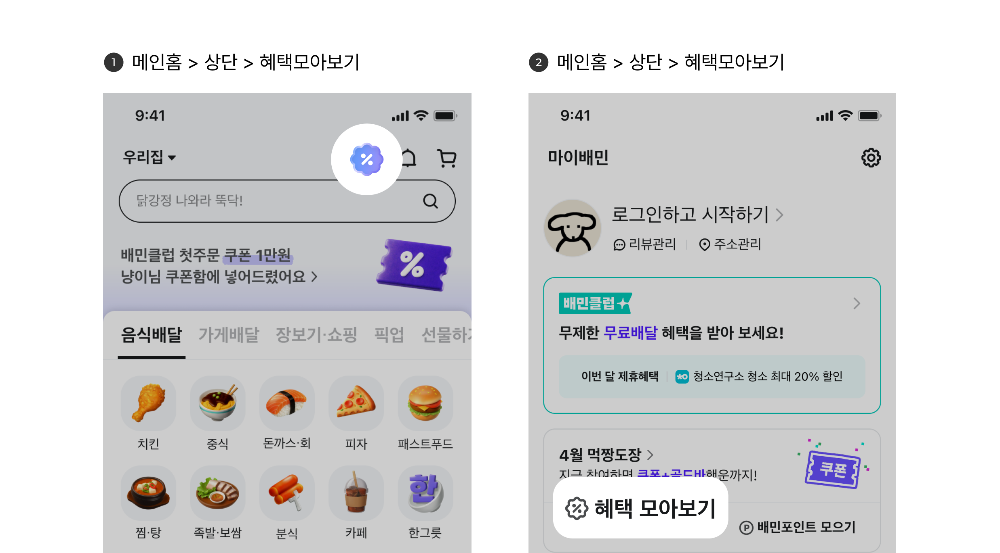
↑ 좌: 대표 이미지. 우: 메인홈 상단 + my배민 상단 노출. 출처: bm-with-design.woowahan.com/hidden-link/bpsr9MDnZk/94
- 핵심 스펙: 720 × 240 px · PNG/JPG · 1MB 이하
- 텍스트 스펙 (엄격): 메인텍스트 Bold 45~52px 높이 / 한 줄 최대 10자, 두 줄 최대 14자 (띄어쓰기 포함) / 서브텍스트 Regular 최대 16자
- 컬러 제한: 최대 3가지 (광고주 로고 제외)
- 글줄 규칙: 최소 2줄 (메인+서브), 최대 3줄 (메인 2줄 + 서브)
- 심의필: 1줄 16pt, 2줄 12pt / 배경 대비 White or Black 택1 (투명도 45~65%)
- 노출 위치: 메인홈 상단 + my배민 상단 (혜택 모아보기 지면)
- 카톡 시사점:
- 카톡 더보기 탭 신규 포맷(아젠다 7)의 직접 스펙 참고
- "한 줄 10자·두 줄 14자" 같은 극도로 엄격한 자수 제한 → 카톡 광고 소재 심사 기준 벤치마크
- 3가지 컬러 제한은 광고 소재의 시각 통일성을 유지하는 강력한 도구
4) 사이배너 · 카톡 비즈보드 유사 지면
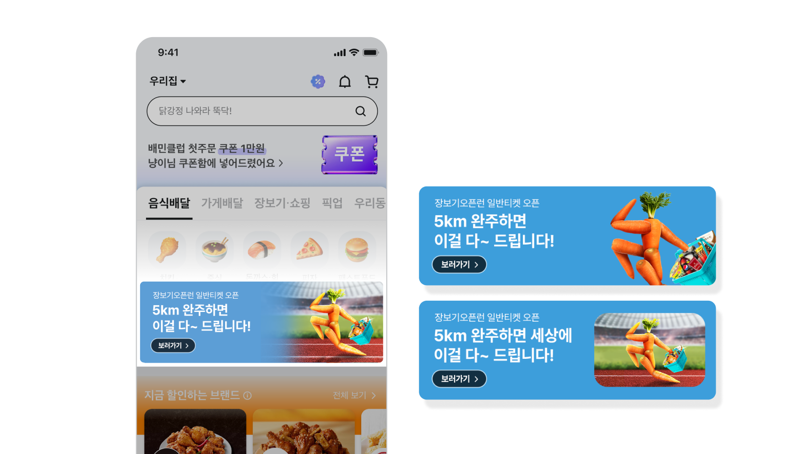
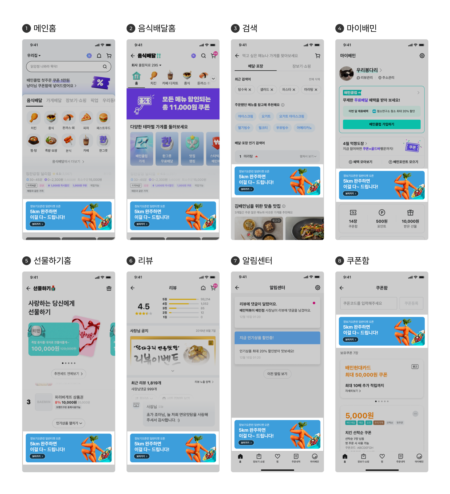
↑ 좌: 사이배너 대표 이미지. 우: 앱 내 노출 지면. 출처: bm-with-design.woowahan.com/hidden-link/bpsr9MDnZk/71
- 핵심 스펙: 720 × 240 px · PNG/JPG · 1MB 이하
- 텍스트 스펙: 메인 Bold 43pt / 서브 Regular 24pt / 심의필 Regular 14pt or 18pt / 폰트 자간 -20 통일 / 폰트 Pretendard
- 버튼 가로 폭: 390px
- 강조선: 별도 스펙 있음
- 카톡 시사점:
- 카톡 비즈보드와 가장 유사한 지면 — 카톡 PM이 직접 매핑
- 배민이 자간 -20으로 통일 강제하는 것은 소재 시각 밀도를 균일하게 유지하는 방법
- 카톡 비즈보드 3규격 확장 시 자간·간격 기준 표준화 참고 가능
- 아젠다 2(커스텀 비즈보드) 도입 시 배민 사이배너의 폰트·컬러 통일 정책을 그대로 적용 가능
5) 배달현황배너 · 액션 진행 중 컨텍스트 광고
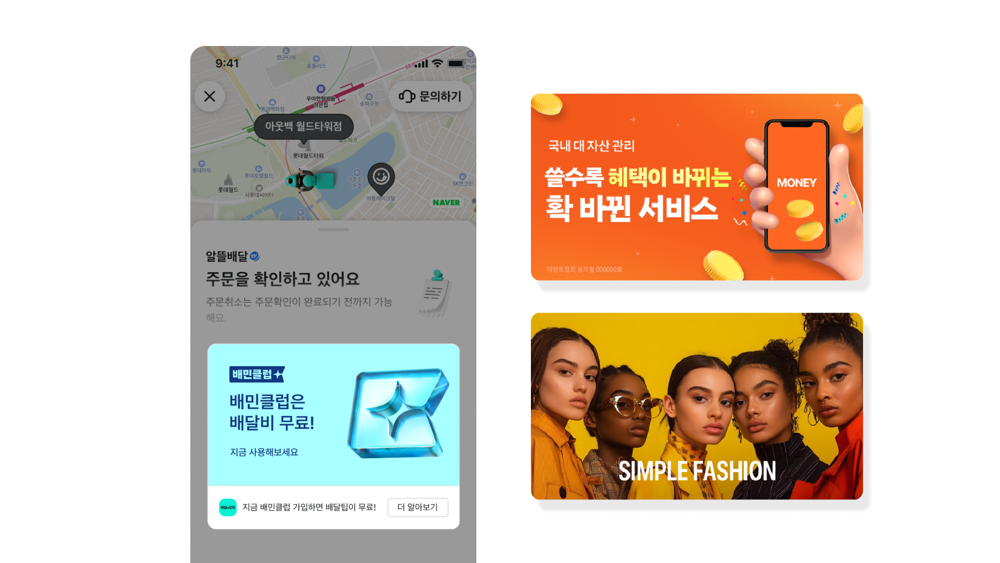
🖼 이미지 미수집 (g72-02-placement.png)
↑ 배달현황 화면 내 배너 광고. 출처: bm-with-design.woowahan.com/hidden-link/bpsr9MDnZk/72
- 핵심 스펙: 720 × 405 px · PNG/JPG · 1MB 이하 (정보 영역 로고는 72×72 별도)
- CTA 버튼 4종: "더 알아보기"(기본) / "참여하기" / "구매하기" / "앱 설치하기" / "가입하기" 중 택1
- 설명문구: 최대 36자 (권장 24자), 24자 초과 시 특정 기기에서 말줄임 처리
- 광고 알림 버튼: 최대 24자 (권장 19자)
- CTA 컬러: 기본 black(#313335) or white(F3F5F7), 광고주가 커스텀 컬러 코드로 선택 가능
- 텍스트 스펙: 메인 28~56px 최대 3줄 / 서브 18~24px 한 줄, 최대 2가지 컬러
- 폰트 제약: 한나체 사용 불가 (Noto Sans, Pretendard, Spoqa Han Sans 권장) / 장평 100% 고정
- 카톡 시사점:
- "액션 진행 중" 광고 지면의 완결형 사례 — 사용자가 배달을 기다리는 대기 시간에 광고 노출
- 카톡의 유사 지면: 선물하기 배송 조회 화면, 톡딜 주문 상태 조회 — 신규 시드 후보
- CTA 4종 옵션 제공은 광고주 목적별 최적화의 표준 (카톡 광고 도입 검토 시 참고)
6) 배달현황 동영상 광고 · 지면 50% 노출 시 자동재생
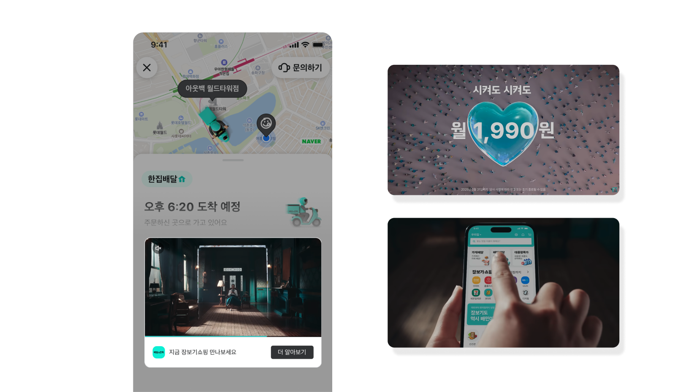
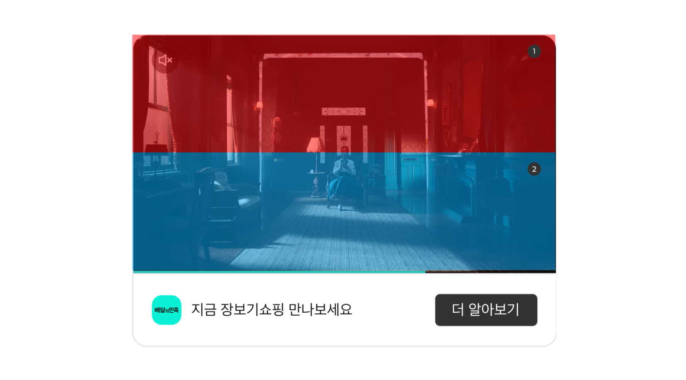
↑ 좌: 배달현황 동영상 대표. 우: 영상 재생 정책. 출처: bm-with-design.woowahan.com/hidden-link/bpsr9MDnZk/73
- 핵심 스펙: 1280 × 720 px · MP4 · 10MB 이하 · 5~30초
- 영상 재생 정책 (매우 참고할 가치 있음):
- 영역 50% 미만 노출 시 자동 일시 정지 · 일시정지 버튼 없음
- 지면 진입 후 50% 이상 노출 시 음소거 상태로 자동 재생
- LTE 환경에서는 5초간 자동 재생 후 정지 (데이터 절약)
- 사운드 버튼 클릭 시 사운드 ON/OFF 토글
- 사운드: 있으면 권장, 없으면 "소리가 없는 동영상입니다" 안내 문구 필수
- CTA·설명문구: 배달현황배너와 동일 스펙
- 카톡 시사점:
- 아젠다 1(비즈보드 영상 3초→장초)의 최상급 참고 사례 — 5~30초 유연 스펙, 50% 자동재생·LTE 5초 제한 정책
- 카톡 숏폼 동영상 광고에도 "LTE 환경 5초 후 정지" 데이터 절약 정책 도입 시 사용자 저항감 크게 감소
- 사운드 ON/OFF 토글 명시적 노출은 UX 표준 (아젠다 4 참고사항)
7) 스토리영상광고배너 (NEW 2026-07) · 카톡 숏폼 직결 벤치마크
🖼 이미지 미수집 (g250-01-hero.png)
🖼 이미지 미수집 (g250-02-placement.png)
↑ 스토리 영상 광고 배너. 출처: bm-with-design.woowahan.com/hidden-link/bpsr9MDnZk/250
- 핵심 스펙:
- 동영상 1080 × 1920 (9:16 비율) · MP4 · 150MB 이하
- 로고 216 × 216 px · PNG/JPEG/JPG · 100KB 이하
- 사운드 필수 — 사운드 없으면 등록 불가
- 광고주명: 최대 16자
- 행동유도 버튼 2종:
- "더 알아보기" — 글자색 화이트(#FFFFFF) 또는 블랙(#000000) 택1
- "주문하기" — 민트색(#0CEFD3) 고정
- 주요 콘텐츠 중앙 배치 필수 — 디바이스 크기에 따라 가장자리 잘림
- 광고주 등록 대상: 동영상 파일 + 로고 (그 외 요소는 배민애즈 업로드 화면에서 기재)
- 카톡 시사점:
- 카톡 숏폼 광고의 완벽한 직접 벤치마크 — 9:16 비율·150MB 상한·사운드 필수·CTA 2종
- "광고주는 영상+로고만 등록, 나머지는 시스템이 조립" 패턴 → 저공수 크리에이티브 표준화
- 카톡 아젠다 1(비즈보드 영상 확장) + 지금탭 숏폼 광고 개선의 즉시 이식 가능 스펙
8) 리뷰완료배너 (NEW 2026-07~ 출시) · 카톡 아젠다 4 최신 벤치마크 ★
🖼 이미지 미수집 (g231-01-hero.png)
🖼 이미지 미수집 (g231-02-example.png)
↑ 리뷰쓰기 완료 후 노출되는 광고. 출처: bm-with-design.woowahan.com/hidden-link/bpsr9MDnZk/231
- 핵심 스펙: 900 × 1668 px · PNG · 1MB 미만 · 투명 배경 필수
- 노출 트리거: 사용자가 리뷰 작성을 완료한 직후 노출 (2026-07부터 신규 지면)
- 투명 이미지로 만드는 이유: 배민이 지정한 배경 요소 위에 광고 소재가 얹혀 자연스러운 통합감을 만듦
- 카톡 시사점:
- 카톡 아젠다 4(선물하기·톡딜 서비스 종료 광고)의 최신·최상급 벤치마크
- 배민이 "리뷰 완료 후"라는 가장 만족도가 높은 순간을 광고 트리거로 삼음 (2026년 신규 개발 트렌드)
- 유사 카톡 트리거: 선물 완료 후, 결제 완료 후, 이모티콘 다운로드 후, 통화 종료 후
- 투명 배경 이미지로 시스템 배경과 통합하는 방식은 카톡 광고 소재의 UX 자연스러움을 극대화하는 핵심 기법
9) 배달현황 핀 광고 · 지도앱 광고
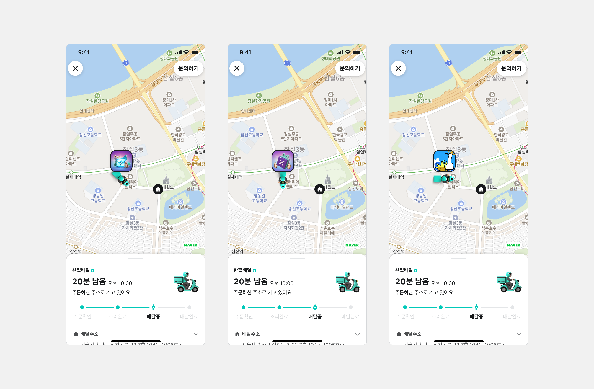
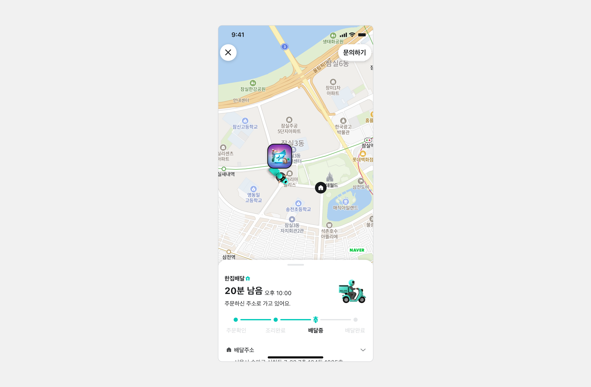
↑ 배달현황 지도의 핀 광고. 출처: bm-with-design.woowahan.com/hidden-link/bpsr9MDnZk/268
- 핵심 스펙: 216 × 216 px · PNG · 1MB
- 디자인 제약 (엄격):
- 이미지 내 텍스트 사용 불가 (예외: 텍스트 로고 허용)
- 브랜드/캐릭터/상품을 은유적으로 표현 (예: 캐릭터·상징적 사물·시그니처 컬러)
- 투명 PNG는 회색(#F3F5F7) 배경 자동 적용
- 집행 제한: 푸드 업종은 집행 제한 — 고객이 주문한 음식과 광고 혼동 방지
- 카톡 시사점:
- 카카오맵 광고의 핀 형태 광고 벤치마크
- "지도 위에서는 텍스트 없이 시각적 상징만으로 브랜드 인지" 원칙 → 카카오맵 광고 소재 가이드 참고
- 경쟁 카테고리 제한은 카톡 광고 심사의 참고 정책 (예: 톡딜 상품과 유사한 브랜드는 톡딜 종료 후 광고 제한)
10) NEW 메시지카드 (2026-07 신규) · 커스텀 비즈보드 직결 ★
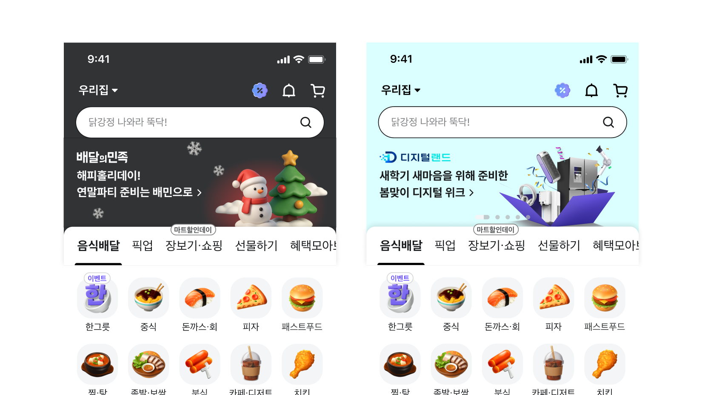
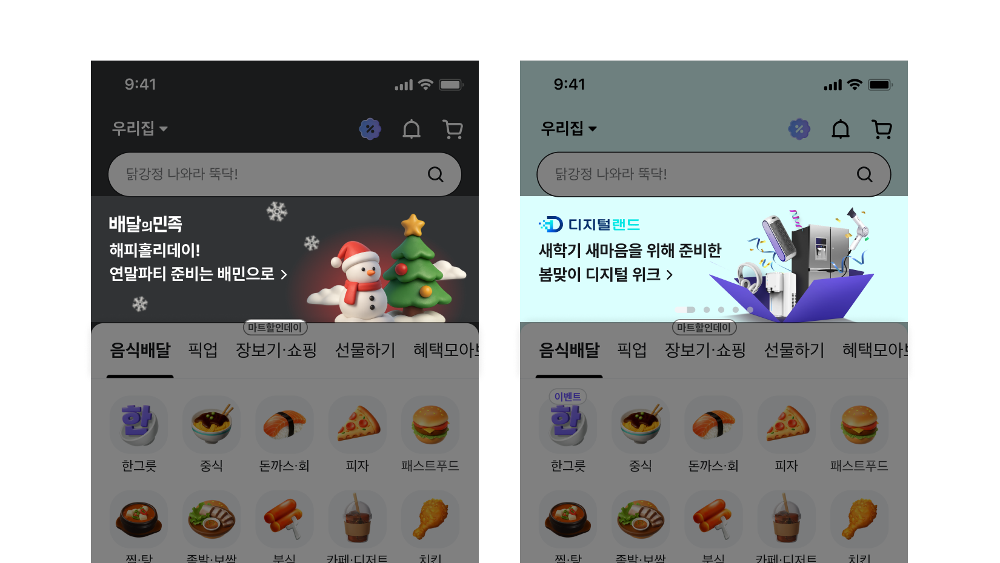
↑ 좌: 메시지카드 대표. 우: 메인홈 검색창과 탭 사이 노출 위치. 출처: bm-with-design.woowahan.com/hidden-link/bpsr9MDnZk/265
- 핵심 스펙: 1125 × 366 px · PNG · 200KB 이하
- 노출 위치: 메인홈 내 검색창과 탭 사이 (진입면 프리미엄 지면)
- 다크/라이트 모드 2종 필수 제작: 배너 1번 배경에 따라 자동 선택되어 노출
- 텍스트 스펙 (엄격): 메인 Pretendard Bold 48pt / 자간 0 / 2줄 고정 / 마지막 줄에 > 아이콘 필수
- 자수 제한:
- 한글 only: 15자
- 한글 + 숫자/기호: 최대 17자 (한글 최대 13자)
- 띄어쓰기 포함
- 이미지 배치: 텍스트와 안 겹치게 오른쪽에 배치 + 좌/우/상단 투명 처리
- 로고: 가로형 로고 우선, 정방형만 있으면 텍스트 브랜드명 대체
- 카톡 시사점:
- 카톡 아젠다 2(커스텀 비즈보드) 최상급 직접 벤치마크 — 카톡 PM이 직접 "커스텀 비즈보드와 유사" 매핑
- 200KB의 초경량 스펙 → 카톡 비즈보드 3초 로딩 제약과 정합
- 다크/라이트 모드 자동 매칭은 카톡의 야간 모드 대응 시 필수 스펙
- 자수 제한(한글 15자, 한글+기호 17자)은 카톡 소재 심사 가이드 표준화 벤치마크
-
아이콘 필수 규칙은 사용자에게 "이 카드는 눌러야 한다"는 어포던스 신호
11) 검색서제스트 광고 · 아젠다 7 검색 광고 벤치마크
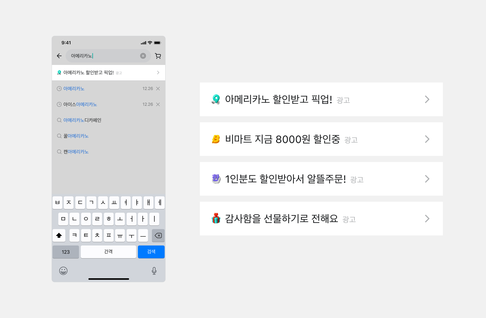
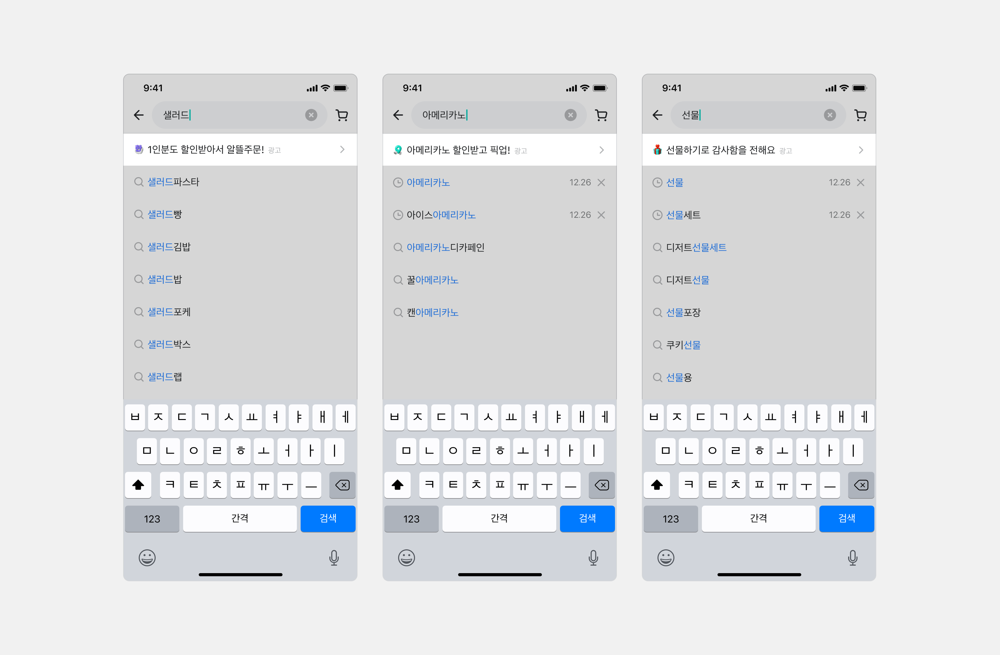
↑ 검색창 입력 중 노출되는 추천 검색어 자리의 브랜드 광고. 출처: bm-with-design.woowahan.com/hidden-link/bpsr9MDnZk/235
- 핵심 스펙: 60 × 60 px 원형 · PNG · 1MB 미만
- 노출 위치: 검색창 입력 중 나타나는 추천 검색어 자리
- 랜딩페이지: 배민 앱 내 검색결과 / 브랜드관 / 이벤트페이지
- 디자인: 원형 이미지, 배경 없음, 지정된 요소 외 없음
- 카톡 시사점:
- 카톡 아젠다 7(더보기 탭 신규 포맷) 검색 광고 신설의 참고 사례
- 카톡 검색 광고 신설 시 초기 인벤토리는 "브랜드 로고 아이콘 원형" 형태로 시작 가능
- 배민이 이미 검색 광고를 CPC로 판매 중 → 당근 NOL 사례(KPI 489%)와 결합해 카톡 검색 광고 도입 근거
카톡 개발 시사점 · 부록 총론
배민 광고 제작 가이드 11개를 관통해 카톡 광고 상품 개발 시 즉시 활용 가능한 5가지 시사점:
-
바텀시트→플로팅 변형 (중문배너) — 사용자가 광고를 완전히 닫지 않고 축소하는 UX. 카톡 톡딜/선물하기 프로모션 배너에 즉시 이식 가능한 새로운 인터랙션 패턴.
-
PSD 템플릿 강제 + 뱃지 3종 제한 (대문배너) — 광고주가 시각 통일성을 유지하도록 배민이 강제하는 방식. 카톡 광고 소재 심사·QA 시스템 개편의 벤치마크.
-
LTE 환경 5초 자동재생 후 정지 (배달현황 동영상) — 사용자 데이터 절약 정책이 광고 저항감을 크게 감소시킴. 카톡 숏폼 동영상 광고에 즉시 이식.
-
다크/라이트 모드 자동 매칭 (메시지카드) — 광고주가 2종 소재만 등록하면 시스템이 배경 대비에 따라 자동 선택. 카톡 야간 모드 대응 시 필수 스펙.
-
투명 배경 이미지 필수 (리뷰완료배너) — 시스템 배경과 통합해 광고의 UX 자연스러움을 극대화. 카톡 아젠다 4(서비스 종료 광고) 소재 표준으로 채택 가능.
신규 시드 후보 (배민에는 있고 카톡에는 아직 없는 지면)
- 메시지카드 형태: 메인홈 검색창과 탭 사이의 진입면 프리미엄 지면 (카톡 상단 광고와 다른 위치)
- 바텀시트→플로팅 변형: 최소화 인터랙션 지원 배너
- 핀 광고: 지도형 인벤토리 (카카오맵 광고와 연결)
- 서제스트 광고: 검색 입력 중 추천 자리 브랜드 노출
부록 B · 배민 공식 광고 소개서 2026.07 · 단가·노출량·예상 지표 ★★
출처: (2026.07) 배달의민족_광고소개서_대행사.pdf (36쪽, 우아한형제들 광고상품기획팀, 사용자 제공). 부록 A(제작 가이드 11개)가 소재 스펙을 다뤘다면, 이 부록은 판매 단가·노출량·예상 CTR·타겟팅 옵션을 다룹니다. 대행사에 실제로 배포되는 자료라서 공시 단가와 협상 단가가 함께 표기되어 있습니다.
B-1 · 배민 서비스 지표 (2026.07 기준)
- 누적 앱 다운로드: 54,000,000건+
- 월 방문자 수: 20,000,000명+ (MAU 2천만+)
- 월 주문 수: 100,000,000건+
- 성별 구성: 여성 57% · 남성 43%
- 연령 구성: 20대 34% · 30대 31% · 40대 21% (2040 유저 80% 이상)
- 광고 특장점: (1) 압도적·안정적 트래픽 (주중/주말 편차 없이 연중무휴) (2) 다양한 노출 지면 활용 (서비스 이용 동선 8개 지면) (3) 정교한 유저 타겟팅 (성별/연령/지역/결제 데이터)
B-2 · 광고 상품 단가·노출량 통합표 (공식 소개서 기준)
섹션 02-1 · 모든 업종 가능
| # |
상품 |
개편 |
노출 단위 |
판매 단가 (공시 → 협상) |
예상 지표 |
| 1 |
대문배너 |
2026-07 개편 |
월~목 1일 5구좌 / 금~일 1일 6구좌 |
월~목 CPT ₩6,000,000 → ₩4,000,000
금~일 CPT ₩7,500,000 → ₩5,000,000 |
노출량 1일 약 160만 건 이상 |
| 2 |
중문배너 |
2026-07 개편 |
월~목 1일 3구좌 / 금~일 1일 4구좌 |
CPT ₩15,000,000 → ₩10,000,000 |
노출량 1일 최대 50만 건, CTR 약 7~9% |
| 3 |
사이배너 |
— |
유저 서비스 동선 내 8개 지면 |
CPM ₩2,500 → ₩1,500
(타겟팅 조건당 +10% 할증, 최대 50%) |
CTR 0.3% |
| 4 |
혜택배너 |
— |
(좌) 혜택 모아보기 음식배달탭 하단 제휴혜택 (우) 이벤트탭 제휴혜택 카테고리 |
CPC ₩600 → ₩400
(타겟팅 단가 ₩500) |
CTR 2% |
| 5 |
배달현황 배너 |
2026-07 개편 |
배달현황 지면 |
CPC ₩750 → ₩500
(타겟팅 10% 할증, 최대 50%) |
CTR 1% |
| 6 |
배달현황 동영상 |
2026-07 개편 |
배달현황 지면 |
CPC ₩1,050 → ₩700
(타겟팅 10% 할증, 최대 50%) |
CTR 0.8% (논타겟, 전체 업종 평균)
VTR 70% (2초 기준) |
| 7 |
배달현황 핀 광고 |
2026-08 오픈 |
배달현황 지도 지면, 1일 3구좌 랜덤 |
월~목 CPT ₩6,000,000 → ₩4,000,000
금~일 CPT ₩7,500,000 → ₩5,000,000 |
노출량 1일 약 100만 건 이상 |
| 8 |
리뷰완료 배너 |
2026-07 오픈 |
리뷰 작성 완료 지면 이후, 1일 1구좌 |
CPT ₩7,500,000 → ₩5,000,000 |
노출량 약 15만 건, CTR 20% |
섹션 02-2 · 배민 입점 브랜드만 가능
| # |
상품 |
개편 |
노출 단위 |
판매 단가 |
예상 지표 |
| 9 |
메인홈 뱃지 |
2026-07 오픈 |
메인홈 음식배달탭 카테고리 아이콘 10번, 1일 3구좌 |
CPT ₩15,000,000 → ₩10,000,000 |
노출량 월~금 1일 약 500만 건 / 토~일 1일 약 650만 건 |
| 10 |
메세지카드 광고 |
2026-08 오픈 |
메인홈 상단 메세지카드 영역 (2번 슬롯), 1일 1구좌 |
CPT ₩22,500,000 → ₩15,000,000 |
노출량 1일 약 250만 건 |
| 11 |
스토리 동영상 |
2026-07 오픈 |
메인홈 동영상 지면 |
CPM ₩9,000 → ₩6,000
(타겟팅 10% 할증, 최대 50%) |
CTR 0.5% |
| 12 |
브랜드 뱃지 |
2026-07 오픈 |
음식배달 서브 카테고리 상단 뱃지, 첫 화면 |
CPT 1주 1구좌 ₩30,000,000 → ₩20,000,000 |
카테고리별 노출 단위·지표 담당자 문의 |
| 13 |
검색 서제스트 |
2026-07 오픈 |
검색창 / 브랜드 서제스트 |
CPT 1개월 독점 패키지 (치킨/피자/카페·디저트/패스트푸드/족발/중식 등 19개 카테고리 패키지 운영) |
CTR 3.87% |
| 14 |
음식배달홈 배너 |
2026-06 개편 |
음식배달 홈 Top 배너 / DA배너, 1주 4구좌 (3/4/5번/유동) |
3번 ₩34,500,000 → ₩23,000,000
4번 ₩22,500,000 → ₩15,000,000
5번 ₩18,500,000 → ₩12,000,000
유동 ₩6,000,000 → ₩4,000,000 |
3번 주간 100만 내외 · 4번 40만 · 5번 30만 · 유동 10만
예상 클릭률 2.5~3% (브랜드별 상이) |
B-3 · 배민 타겟팅 시스템 (상세 리스트)
| 메인 카테고리 |
서브 카테고리 |
상세 내용 |
| 회원/기기 |
연령 |
1세 단위 타겟팅 |
| 회원/기기 |
성별 |
남/녀 구분 |
| 회원/기기 |
기기/통신사 |
iOS / AOS / 통신사별 |
| 회원/기기 |
지역 |
시 → 군/구 → 동 단위까지 |
| 회원/기기 |
배민클럽 유저 |
가입/미가입 여부 |
| 결제 데이터 |
최근 주문 이력 |
카테고리명·브랜드명·메뉴명·상품명·결제 카드명 (1주 / 2주 / 1개월 기준) |
| 결제 데이터 |
B마트 주문 이력 |
카테고리명·상품명 (1주 / 2주 / 1개월 기준) |
| 결제 데이터 |
구매력 |
최근 3개월 건단가, 평균 주문금액, 누적건수 |
| 리타겟팅 |
배너 클릭 유저 |
자사 배너 클릭 유저 포함/제외 (1주 / 2주 / 1개월) |
| 가구 추정 |
가구 추정 |
1인 / 2인 / 3인 / 4인+ 내부 데이터 기반 |
카톡 시사점: 배민의 타겟팅은 결제 카드명 · 메뉴명 · 브랜드명까지 세분화된 결제 데이터 기반 타겟팅이 핵심. 카카오톡은 카카오페이·톡딜 결제 데이터로 유사 정밀도 확보 가능. 특히 동 단위 지역 타겟팅 + 결제 카테고리 리타겟팅을 결합하면 배민 수준의 광고주 소구력 확보.
B-4 · 배민이 제시한 공식 성공 사례 4개 (KPI 명확)
배민 공식 광고소개서에는 4개 사례가 KPI와 함께 명시되어 있습니다. 이는 리포트 본문의 "관찰·추정" 사례와 달리 공식 공표된 성과 지표로 최상 신뢰도.
| # |
브랜드 |
업종 |
집행 광고 상품 |
핵심 성과 |
| 1 |
60계치킨 |
식음료 |
대문배너 + 중문배너 + 사이배너 |
대문배너 노출수 900만+ · 중문배너 CTR 5%+ (벤치마크 대비 40% 높음) · 사이배너 CTR 0.9~1% (벤치마크 대비 2배 높음) |
| 2 |
스텔라떡볶이 |
식음료 |
대문배너 + 중문배너 + 사이배너 |
중문배너 CTR 5.53% (벤치마크 대비 38% 높음) · 사이배너 CTR 1.06% (벤치마크 대비 30% 높음) · 브랜드찜 4,800% 대폭 증가 |
| 3 |
삼성화재 |
금융 |
대문배너 + 중문배너 + 사이배너 + 배달현황배너 |
중문배너 CTR 4~5% (벤치마크 대비 12% 높음) · 혜택배너 CTR 3~4% (벤치마크 대비 75% 높음) |
| 4 |
엔라이즈 위피 |
앱(소셜/데이팅) |
혜택배너 + 사이배너 |
혜택배너 CTR 13% (벤치마크 대비 5배 높음) · CVR 21.5% (타 매체 대비 21.5% 개선) · CPA 5~10% 절감 |
| 5 |
유니버설픽쳐스 <드래곤 길들이기> |
영화/OTT |
선물하기 패키지 + 대문배너 + 중문배너 + 사이배너 |
이벤트페이지 유입 수 78,000+ (벤치마크 대비 7% 높음) · 카드 판매 수 2,700+ (벤치마크 대비 27% 높음) |
B-5 · 배민 광고 벤치마크 CTR (부록 A + B 통합)
배민이 광고 상품별로 자체적으로 관리하는 벤치마크 CTR 수준을 정리합니다. 이는 카톡 광고 상품 신설 시 목표 CTR 설정의 참고 데이터가 됩니다.
| 광고 상품 |
벤치마크 CTR |
참고 최우수 사례 CTR |
| 리뷰완료 배너 |
20% (자체 예상) |
— |
| 대문배너 |
(노출 위주) |
60계치킨 900만+ 노출 |
| 중문배너 |
7~9% (자체 예상) |
삼성화재 4~5% · 스텔라떡볶이 5.53% · 60계치킨 5%+ |
| 검색 서제스트 |
3.87% |
— |
| 음식배달홈 배너 |
2.5~3% |
— |
| 혜택배너 |
2% (자체 예상) |
엔라이즈 위피 13% · 삼성화재 3~4% |
| 사이배너 |
0.3% |
스텔라떡볶이 1.06% · 60계치킨 0.9~1% |
| 배달현황 배너 |
1% |
— |
| 배달현황 동영상 |
0.8% (전 업종 평균), VTR 70% |
— |
| 스토리 동영상 |
0.5% |
— |
주요 관찰
- 리뷰완료 배너의 자체 예상 CTR이 20%로 압도적 — 리뷰 작성이라는 능동 액션 직후 노출되는 지면이라 사용자 방어감이 매우 낮음. 카톡 아젠다 4(선물하기·톡딜 종료 광고) 도입 시 유사 컨텍스트 지면의 예상 CTR 벤치마크로 활용 가능.
- 혜택배너의 벤치마크 CTR 2% 대비 엔라이즈 위피가 13% (6.5배) 기록 — 광고 소재·타겟팅 최적화 시 카톡에서도 이런 편차가 가능함을 시사.
- 배달현황 동영상 VTR 70% (2초 기준) — LTE 5초 자동재생 정책과 결합해 데이터 절약형 동영상 광고의 표준 지표 벤치마크.
- 사이배너 CTR 0.3% 대비 카톡 비즈보드는 유사한 진입면 광고 상품이므로 이 지표가 참고 기준선.
B-6 · 배민 광고 상품의 카톡 아젠다 매핑 (단가·성과 근거 강화)
부록 A는 소재 스펙 관점, 부록 B는 상업적 관점에서 카톡 아젠다를 재매핑합니다.
| 카톡 아젠다 |
배민 최상급 벤치마크 |
판매 단가 (참고) |
예상 CTR/성과 |
| 아젠다 1 (비즈보드 영상 연장) |
배달현황 동영상 + 스토리 동영상 |
CPC ₩700 / CPM ₩6,000 |
CTR 0.5~0.8% / VTR 70% |
| 아젠다 2 (커스텀 비즈보드) |
메세지카드 광고 (다크/라이트 자동 매칭) |
CPT ₩15,000,000 |
1일 250만 노출 |
| 아젠다 3 (통화 종료 광고) |
배달현황 지면 시리즈 (배너+동영상+핀) |
CPC ₩500~700, CPT ₩4,000,000 |
CTR 0.8~1% |
| 아젠다 4 (선물하기·톡딜 종료 광고) ★ |
리뷰완료 배너 (2026-07 오픈) |
CPT ₩5,000,000 (1일 1구좌 독점) |
CTR 20% 예상 |
| 아젠다 5 (숏폼 크리에이터 수익쉐어) |
스토리 동영상 (배민 입점 브랜드 한정) |
CPM ₩6,000 |
CTR 0.5% |
| 아젠다 6 (오픈채팅 플로팅 배너) |
중문배너 (바텀시트→플로팅 변형) |
CPT ₩10,000,000 |
1일 50만 노출, CTR 7~9% |
| 아젠다 7 (더보기 탭 신규 포맷) |
메인홈 뱃지 + 검색 서제스트 |
CPT ₩10,000,000 / 패키지 |
노출 500만+ / CTR 3.87% |
시사점
- 카톡 광고 상품 신설 시 판매 단가 벤치마크로 활용 가능. 배민의 CPT 4백만~2천3백만 원 스케일이 카톡 유사 지면 가격 설정의 참고선.
- CPT vs CPM vs CPC 혼합 판매가 표준. 프리미엄 지면은 CPT(구좌 판매), 성과 지면은 CPC/CPM.
- 타겟팅 할증 10%, 최대 50%까지 누적 정책은 광고주 옵션 판매의 표준 스킴. 카톡 카카오모먼트 판매 정책 개편 시 참고.
소스 목록
공식 페이지 (SPA 특성상 인앱/브라우저 최종 확인 필요)
- 배민 사장님광장: https://ceo.baemin.com/
- 배민 사장님광장 노하우: https://ceo.baemin.com/knowhow (게시글 다수)
- 우아한형제들 공식: https://www.woowahan.com/
- 우아한형제들 뉴스룸: https://www.woowahan.com/newsroom/report
- B컷 by 배민(브랜드 콘텐츠): https://bcut.baemin.com/
- 우아한형제들 기술블로그: https://techblog.woowahan.com/
언론 (배경 지식)
- 위키백과 배달의민족: https://ko.wikipedia.org/wiki/배달의_민족
- Wikipedia (EN) Baedal Minjok: https://en.wikipedia.org/wiki/Baedal_Minjok
- 우아한형제들 2023 매출·영업이익: 우아한형제들 감사보고서(2024.04 공시) → 한경·매경 다수 보도
광고대행사(참고)
- 나스미디어: https://www.nasmedia.co.kr/
- 메조미디어: https://www.mezzomedia.co.kr/
- 인크로스: https://www.incross.com/
- DMC미디어: https://www.dmcreport.co.kr/
미확정 항목: 위 리스트에 "관찰·추정" 표기된 모든 사례·수치는 후속 리서치에서 대행사 매체 소개서·업계 인터뷰·공식 자료로 검증 필요.
← 상위 인덱스로 돌아가기